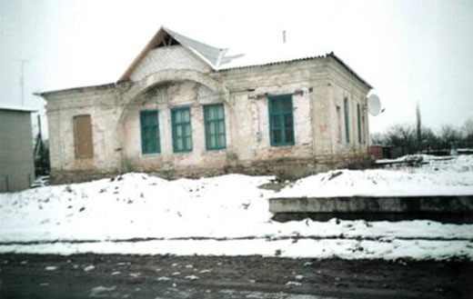
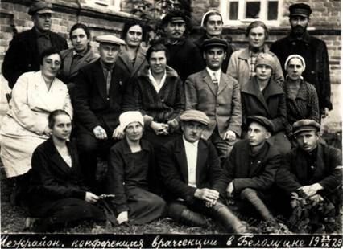

НАШ КРАЙ (ЛУГАНЩИНА) В НАЙДАВНІШІ ЧАСИ
Найдавніші людські пам’ятки знайдені в Донецьких степах – це кам’яні рубила, вік яких 200000 років.
Найдавніше поселення було відкрито на Луганщині, в районі річки Деркул, відомим археологом П.П.Єфименком,
вік цієї стоянки близько 50 тис. років. Наш район, на превеликий жаль, досліджений дуже мало. Лиш на початку
80-х років археолог К.І..Красильников виявив сліди діяльності людини, що жила в епоху палеоліту (палео – давній, літос - камінь)
тобто давньо-камяного віку. Таку назву цей період історії отримав через те, що всі знаряддя праці виготовлялися з кремнію.
Цей матеріал завдяки його особливості порівняно легко колеться на пластини, краї яких були гострими і досить твердими
і дуже широкому розповсюдженню використовувався людьми для виготовлення скребків, проколок і т.п.
Також широко використовувалися для виготовлення молотів, сокир, боласів більш масивні (камені) мінерали,
які не розколювались. Наприклад, граніт і у великій кількості археологи знаходять нуклеуси - це ті камінці, з яких відколювали кремінні пластинки.
Епоха палеоліту співпадає з льодовиковим періодом, наш край тоді нагадував тундру, де випасалися мамонти і інші шерстисті тварини.
Підтвердженням цього є знахідки кісток мамонта біля сіл Осинове і Писарівка. А біля нашого селища знайдено стоянку мисливців на цих тварин.
В епоху Мезоліту на берегах Айдару живуть люди, основним заняттям яких були, як і раніше, мисливство і рибальство та збиральництво.
Основним винаходом цієї епохи була поява лука і стріл. Знаряддя праці дещо починають змінюватися: маленькі гострі пластинки кремнію
(мікроліти) тепер вставляються в дерев’яні чи кістяні оправки. Стоянки епохи мезоліту і біля селища Білолуцьк, а також Пелагіївка, Соснівка.
Близько 5-6 тисяч років тому в добу енеоліту наші предки почали займатися землеробством і скотарством.
Сліди перших скотарів та землеробів виявлено біля сіл Ікове, Хворостяне, а у нас неподалік від села Кубань.
Люди починають в цей період широко використовувати для своїх потреб глину.
ЕПОХА БРОНЗИ 5-6 тис. р.
Найбільше цікавих пам’яток знайдено археологами у нашому районі і відносяться до епохи, коли людина вперше познайомилася з металом - це була бронза.
У районному краєзнавчому музеї знаходиться бронзовий топірець кельтського типу. Метал обробляли методом лиття. Вік цієї знахідки близько 3 тис. років.
Належав цей топірець таємничому народові кіммерійцям. Саме до цього часу відносяться і перші писемні згадки про наших предків у стародавніх авторів.
Хоч ці відомості у Гомерівській «Іліаді» і історії Геродота, зокрема в книзі «Мельпомена», є на пів легендарними, все ж вони дають підтвердження
певним знахідкам і гіпотезам археологів. Згадуються ці народи пізнішою назвою в книзі книг БІБЛІЇ. Вчені ототожнюють кіммерійців з племенами зрубної
археологічної культури. Так вона називається через спосіб поховання своїх померлих і загиблих родичів цим народом,
бо в поховальній ямі вони робили дерев’яні зруби. По місцю знахідки цих поховань і роблять висновок про розселення цього народу.
Долина Айдару входить до ареалу, де було вперше одомашнено дикого коня. Вперше було створено озброєні кінні загони, якими і здійснювали далекі завойовницькі походи.
Може через цю відданість їх і називали кентаврами - напівлюдьми, напівкіньми. Загадка кіммерійців, які прожили в наших степах близько восьми століть,
ще далеко не розгадана. Чи їх асимілювали (поглинули) інші прийшлі племена, чи вони пішли з цих територій на Північ України.
Це загадка, яка ще потребує свого вирішення.
У 7 ст. до н.е. з-за Дону приходять войовничі племена скіфів, про це свідчать археологічні дані і писемні пам’ятки,
які написані цілому ряду давніх авторів. Найбільш визначне місце серед них належить Геродоту, який описав племена скіфів,
виділивши серед них скіфів царських воїнів і землеробів. Скіфів, що жили на сході від Борисфену – (так давні греки називали Дніпро)
він називає землеробами. Самі Скіфи Сіверський Донець, до басейну якого належить наша територія,
називали Сергісом Напередодні нової ери скіфи були витіснені або частково асимілювались з більш відсталим,
але войовничим народом сарматами – інша назва – алани. Вони стали господарями степу на декілька століть.
ПОЧАТОК НАШОЇ ЕРИ І РАННЄ СЕРЕДНЬОВІЧЧЯ
Перші століття нашої ери характерні, як період «великого переселення народів». Різні племена пройшли через українські степи.
Були тут, крім сарматів, гуни, готи, угри (до речі, давні предки сучасних угорців),
хазари, вари, болгари. Багато пам’яток залишили про себе ці народи це і їх поховання і поселення,
які в більшій своїй частині ще не знайдені і недостатньо досліджені. Але болгари, які витіснялися іншими кочовими племенами з Волзької Болгарії,
залишили багато поселень, з характерними круглими печами тандитами і багатьма іншими знахідками.
Ще раз хочеться підкреслити, що археологічне дослідження нашого селища і району попереду,
більш досліджені подібні поселення на Харківщині, звідти і назва цієї археологічної культури Салтівська,
бо там біля с. Салтів було вперше знайдено подібне поселення. Найбільш потужна – фортеця Маркел (Біла Вежа).
Салтівці мали тісні зв’язки з слов’янами. В 1960 році в с. Піски була знайдена слов’янського типу сокира.
Розгром Хазарського каганату, в який входили племена салтовської к-ри, відкрив кочівникам шлях на Захід.
Господарями степів стають печеніги. В 972 році в битві з ними гине Святослав. На зміну їм приходять половці.
Почалася довга боротьба Русі з степом, тільки Володимир Мономах витіснить їх за Дон. А спогади про них кам’яні баби.
Найближча до нас подібна знахідка біля с. Можняківки.
В 13 ст. сюди прийшли племена монголо-татар. В 1223 р. вони біля річки Калки завдали поразки руським і половцям і стали кочовими
господарями цієї території, яка від Волги до Криму спустіла і стала називатися Диким полем. Це була територія Золотої орди.
Свідченням цьому є і записи панського посла Італії Плано Карпіні.
Є згадки, що через Луганщину пройшли війська володаря Середньої Азії Тимура.
І після падіння Золотої орди в 1480 р., в степах спокою нема. За думкою луганського археолога К.Красильникова,
він і далі приваблював кочівників своїм різнотрав’ям в долинах рік, яке забезпечувало корм коням.
Уособиці між самими татарами викликали пожежі в степу, на який перш за все претендують кримські татари.
ЗАСНУВАННЯ БІЛОЛУЦЬКА
ЗОЛОТА ОРДА не була міцною державою. Вже в кінці ХІІІ-ХІV ст. в ній були два центри. Один від Дону до Дунаю, контролював темник Ногай,
на схід від Дону хан Тохта. Наша квітуча земля стала ареною боїв між цими угрупуваннями.
В 1620 році за наказом Московського царя Михайла Федоровича було створено унікальний документ «Книга Большого Чертежа». І тепер на південних окраїнах Московської держави були в центрі уваги три шляхи: Муравський, Ізюмський і Кальміусський – річки на них, татарські перевози і перелази, якими татари йшли в Русь.
Вздовж правого берега Айдару йшов шлях – Айдарська сакма, глибоко вбита копитами низькорослих татарських коней, вона була для них
з їхнім способом розбійного життя дорогою, яка давала багату здобич і ясир (так називали татари полонених-бранців).
З 1480 року відомо, що орди татар прямували в українські землі (на рік миру приходилось два роки війни).
Агресія з боку Кримського хана вимагала створення ефективної оборони рубежів Південної Русі.
В першій половині ХУІІ ст. почала діяти 800 км Білгородська лінія, що простяглася від Полтави до Воронежа,
створена самою природою і людьми, які захищали цю землю. Історія виникнення нашого селища пов’язана з історією України і Московської держави.
Дике поле, яке ворогуючі татарські намісники за гарний корм для своїх коней випалювали часто вщент,
біло пусткою, але якою благодатною. Тому відхідники, які зрідка оселялись в землянках тут як степові ховрахи не відали горя від природи,
лише від людей. І так продовжувалось майже півтора століття.
Правобережна і Центральна Україна стогнали під ярмом Речі Посполитої і саме сюди в прабатьківщину втікали селяни звідти.
За свідченням Д.Багалія одного з ґрунтовних дослідників історії слобожанщини сюди йшли втікачі з Чернігівщини і Правобережжя.
селяни втікали і поодиноко і цілими сім’ями, а деколи і всім селом, полишивши все, чи забравши нехитрий домашній скарб прямували в Дике поле.
Російський цар і його сановники, які цю землю вважали своєю, прихильно ставились до втікачів. Вони ТЕС тільки житимуть на цій землі,
а і охоронятимуть її, а значить, рубежі Московії.
Точна дата заснування села не відоме, а от місце заснування – встановлено з вірогідністю. В місці впадіння річки Білої в Айдар,
перша робить крутий вигин і утворює лучку (своєрідна рогатка), що являла собою непогану природну захисну, утруднену для взяття лінію,
але як виявилось згодом не досить і надійну. Походження назв річок пов’язують: р. Айдар – від Тюркського, (чиста, свята вода Сирдар’я,
Амудар’я в Азії). У Тюркомовних народів Сходу є чоловіче ім’я Айдар.
Річки Білої - від характеру місцевості: крейдяні гори, біля яких вона протікала.
Район заснування селища (схід річок)
Втікачі, які засновували такі поселення, називали їх слободами (від слова свобода, бо вони тепер себе вважали незалежними, вільними).
Цю слободу вони називали Біла Лука, яка з часом трансформувалась у Білолуцьк.
Першою писемною згадкою про наше селище є донесення острогозького воєводи Московського цареві,
датоване 1643 роком. В ньому згадується, що серед поселень, спалених під час чергового набігу татар, по річці Айдар розорений і спалений Білолуцьк.
Після цього нападу вцілілі жителі переселились на правий, більш високий берег Айдару, укріпивши поселення валом і ровом, заповненим водою.
Ось з таких поселень формується територія Слобідської України (нині це територія Харківської, частини Сумської, Донецької, Луганської областей
України, а також частини Воронезької, Курської, Білгородської областей Росії). На території Слобожанщини було сформовано п’ять козацьких полків.
Білолуцьк входив до складу Острогорського полку.
ГОСПОДАРСТВО І ПОБУТ
Природа в краї була багатою: ліси і степи – дичиною, річки – рибою, але головне багатство – родючі землі, бо основним заняттям слобожан було
вирощування хліба. В ХУІІ ст. переселенці брали стільки земної, скільки могли обробити. Найбільш поширеним були соха, плуг «косуля»,
запряжений волами. Біля хати розорювали невеликі огороди, де саджали цибулю, ріпу, часник, редиску, буряк, огірки та іншу городину.
Подекуди, особливо на піщаних ґрунтах, були і баштан з кавунами і динями.
Заливні луки, де трава росла така висока, що не видно було навіть вершника на коні, забезпечували тварин кормом і влітку, і взимку.
Будинки були каркасні, крейдянки, але обов’язково обмазані глиною та побілені розчином крейди. Росли тут і садки:
яблуні, груші, вишні, аґрус. В лісах було багато диких яблунь, груш. З часом з’являлися садки і в козацьких садибах.
Засушені плоди взимку використовували і для смачного узвару, який запарювали і готували в глиняних горщиках і як ліки,
бо добре знали лікувальні властивості сухих яблук, груш, гілочок фруктових дерев.
Були і пасіки. Вулики видовбували з вільхової чи вербової колоди, а потім вкривали солом’яним або дерев’яним дашком.
Джерела свідчать, що такий вулик давав в гарний рік до пуду меду. Надлишок меду і воску збували в Московщині.
Прикметою слобід були водяні і вітряні млини (вітряки), але вони будувались, коли слобожани добре обживались. Спочатку зерно товкли в ступах.
Кожна слобода прагнула мати власного коваля і кузню. Асортимент виробів протягом десятиліть змінювався мало –
це підкови, борони, плуги, миски, сани, вила, клямки до дверей.
Слобожани берегли дідівські традиції, звичаї, звички. І це найбільш чітко прослідковувалось в розташуванні двору,
надвірних споруд, простих зручних меблів: міцний стіл, дерев’яні лави і лавки, пізніше зі спинкою, збитий дерев’яний піл, на якому спали.
Кожна молода на весіллі у будинок чоловіка привозила посаг – скриню, з одягом, рушниками, білизною (скриню гарно розмальовували),
перину і подушки. Хату прикрашали вишитими рушниками, де вишивка виконувала роль магічних знаків – оберегів, яким був і сам рушник.
Тканини виготовлялись в селянському господарстві з полотна. Садили льон, а в нашій місцевості частіше коноплі, його називали прядивом.
Процент цей був тривалим і трудомістким. Рослини зрізали, потім закладали в річкові затоки, так звані левади. Є така і в Білолуцьку.
Там вони починали втрачати свою жорсткість, бо верхні тканини стебла відмирали, потім витягували і на спеціальних терницях і битницях
розбивали до стану окремих волокон їх пучки. Мички потім пряли. Так як коноплі мають чоловічу і жіночу рослини, то відрізнялось і полотно
– жіноче матірка – грубе, товсте йшло на ліжники, рядна, грубий частіше верхній одяг, мішки. З чоловічих рослин – плоскінь, або плоскінне полотно
– м’якеньке, тонке – на сорочки, рушники, білизну. Спрядені нитки ткали на ткацьких верстатах. Наткане полотно міряли ліктями.
Людина ставила себе в центр виміру з давніх часів і світ і все в ньому міряла собою. Пряли і вовну з овець, яких теж розводили.
З вовняних ниток плели рукавиці, носки, ткали теплі ліжники.
Поширене серед поселенців вміння чинити шкіру, дубити її. Шили кожухи, кобеняки, взуття. Пізніше з’явились сукновальні.
Одяг, характерний для українських селян, - вишиті сорочки, спідниці, святкові керсетки, свити, буденні дереги.
Харчувались слобожани згідно з загальноукраїнськими традиціями, суворо дотримувалися постів, які співпадали з релігійним календарем,
пристосованим слов’янами до циклу робіт, погоди і кількості харчів.
Посуд на Слобожанщині був переважно глиняний і дерев’яний. Сім’я їла з однієї миски, або з кількох, якщо була великою. Відра,
діжа, чи корито для муки, колиска для немовляти, маслобойка були дерев’яними.
Воду брали з річки, криниці чи колодязя, аби полегшити цю роботу використовували коромисло.
Якщо криниця або колодязь були глибокими, то біля них будували журавля – великий стовп, з перевагою, впоперек нього жердина,
до якої прикріплена ще одна з відром чи гаком для нього. На кінці був мотуз чи цеп. Як перевагу часто використовували камінь
з діркою чи шматок металу. Цямрину і зруб робили із дерева чи каменя.
Землю і воду наші предки дуже цінували, бо вони давали їм все необхідне для життя.
Люди почували себе сильними, господарями цієї землі, вони дбали про майбутнє, охороняючи її від ворога,
щоб передати в спадщину своїм дітям.
БУЛАВІНСЬКИЙ БУНТ.
ЦАРСЬКА КАРА.
ВІДРОДЖЕНИЙ БІЛОЛУЦЬК.
(1696 – 1913 рр.)
Перемога Петра І і захоплення Азова в 1696 році внесли багато змін в життя слобожан і козаків.
Військо Донське, а з ним і слобідське козацтво втрачає тепер роль «буфера» між Росією і Туреччиною,
бо кордон Московщини просунувся далі на південь. Царський уряд почав побоюватись цієї вольниці, куди, як і раніше,
тікали від панської неволі, а «з Дону, - як відомо, видачі немає».
Царські сановники Михайло Пушкін і Максим Кологривов побували в 1703 році в цих краях для пошуку втікачів, але,
як говорилось в їх доповіді, «они не изьехали ни одного человека».
Петро І хотів переселити слобожан на Азовські дороги, але вони вертались додому.
1705 рік це пролог Булавінського бунту, але ні слобожани, ні донці цареві не скорилися, спаливши Бахмутський завод.
Через 2 роки сюди прибуває каральний Ю. Долгорукого. В ніч з 8 на 9 жовтня 1707 року загін зупинився на перепочинок
біля річки Айдар, неподалік Шульгинського містечка. Саме там і «учинился крик и стрельба оружейная», спалахнув бій,
який згодом закінчиться кривавою драмою для багатьох його учасників і спаленням, таких немилих царському окові містечок
по Сіверському Дінцю і його притоках.
За те, що білолучани підтримали К.Булавіна, стали за свою волю, за свої слободи в 1708 році Петро І видав царський указ
– учасників заколоту «перевешать», а містечка знищити: «по Донцу, по Лугань…по Айдару все, по Деркулу все».
Всього було 44 містечка і слободи. Царська рука не здригнулась.
Морозна зима 1708 року, небачені сніги зими 1709 року на Україні перетворили квітучу Білолуцьку слободу,
спалену царськими карателями дощенту, в пустку.
Але не судилося на цій трагічній ноті закінчитися історії Білолуцької слободи. Гарне місце, річка, родючі землі,
в тому числі прекрасні сінокоси для козацьких коней, а головне – люди, що залишилися живими, тяглися душею сюди.
Полковник Острогозького полку Тев’яшов в листі від 06.05.1709 року Приказ Адміралтейських справ
у Воронежі прохає дозволу переселитися в місця, «…де поселені були без указу государя зайшлими
з різних міст людей і в минулому 1708 році за їх злочини і бунт, що вони бунтували з Булавиним і Голим – розорені і спалені».
Цього ж 1708 року Острогозький полк введено в склад Азовської губернії.
1732 році на місце, де був Білолуцьк, приходить сотник Яків Романович Головинський, а з ним переважно козаки-українці з сіл Гвоздьово,
Перлівки, Ендовиць, Урива. Вони заснували Білолуцьку сотню Острогозького полку, за селом залишили стару назву Білолуцьк.
Село знову стало розбудовуватися, зазеленіли сади і поля, але було скасовано давнє правило слобожан займати землі й угіддя,
які пустували. Тепер багато земель роздавались вельможам. Так, князь Борис Куракін в числі інших земель тримав сусідні з Білолуцьком
(села Березівку і Танюшівку).
Роки відродження Білолуцька (1732-1733 рр.) – це роки кліматичних екстремумів: зима була малосніжною і м’якою, але на початку весни, в кінці квітня,
подув сильний вітер, що приніс мороз, обмерзли дерева, які до початку літа стояли голі, ранні посіви. Роки були голодними.
В Білолуцьку кріпаків не було, а це значить, що село було вільним.
Селяни поєднували козацьку службу і хліборобство. Крім традиційних культур, 1766 році слобожани отримали наказ вирощувати «тартуфель»
або «земляні яблука» - тобто таку звичну нині картоплю.
Було дозволено винокуріння і збут горілки, поширені узвіз і чумакування. З розвитком торгівлі широке розповсюдження отримали ярмарки.
Регіональний ярмарок перед великими годовими «роковими» релігійними святами був і в Білолуцьку. Продавались зерно, фураж, худоба, птиця,
сукна, смухи, різний крам – шовк, парча, оксамит, галантерейні товари.
Козаки були людом служивим – і дзвенів метал їх збруї, коли закликав у похід звук церковних дзвонів.
Білолуцька сотня приймала участь у військових походах на Крим в 1735-1739 роках, прикривала Тор (Слов’янськ), Ізюм і Бахмут.
Під час семилітньої війни (1756-1763 рр.) Білолуцька сотня Острогозького полку брала участь в Гросс
– Єгерсдорфській битві в 1757 р., коли прусські війська потерпіли поразку. З 1765 р.
було створено Слобідсько-Українську губернію з центром в Харкові.
В 1765 р. слобідські козацькі полки, в тому числі і Острогозький, були реорганізовані в регулярні і козацькі чини понижені
на один або два порівняно з армійськими. Більшість козаків Царський уряд перевів у розряд військових обивателів,
які підлягали обкладенню подушнім податком, що викликало невдоволення. Військові обивателі, які з загального числа жителів
1469 чоловік становили 1410 чоловік, були близькі до державних обивателів за своїм становищем.
В 1785 р. дворянські права отримали 8 козацьких старшин. Військові обивателі, а фактично селяни, займалися землеробством.
В 1829 р. в Європейській частині Росії спалахнула епідемія холери, яка, затихнувши трошки взимку, з новою силою спалахнула
в 1830 році. Не обминуло це лихо і Білолуцьк, забравши життя багатьох його жителів.
Саме в ці роки в Білолуцьк докотилися царські рішення про військові поселення і тут було в 1828 р.
його організовано. Прибули в Білолуцьк частини Псковського 1-го поселенського ескадрону другої кірасирської дивізії,
і кількість їх господарств склала 486. Режим в цих поселеннях був надзвичайно жорстким – муштра,
непосильна праця залишили по собі важкий слід. Дітей військових поселенців з 8 років віддавали до військового навчання,
і звались вони кантоністами. Унтер-офіцери, що їх навчали, жорстко карали малих хлопчиків у військовій формі за будь-який дитячий непослух.
В слободі з’явилися жінки легкої поведінки, було підірвано засади моралі, які споконвіку підтримувалися силою громадського осуду.
Ще й донині в селищі є прізвисько кірасир, яке пройшло більше, ніж через півтора століття.
Що ж це за військо кірасири? Кірасири – це вид важкої кавалерії в російській армії, починаючи з ХУІІІ ст.
Мали каски і кіраси захисне озброєння з двох металевих пластин, вигнутих по формі грудей і спини, що з’єднувались пряжками на плечах і з боків,
(з середини ХІХ ст. предмет парадного обладунку гвардійської кавалерії).
Приймали білолучани участь у Кримській війні 1853-1855 рр. Але ця війна, продемонструвавши економічну і військову слабкість Російської імперії,
матиме наслідком ряд реформ, в тому числі і військових. В 1857 р. військові поселення було ліквідовано і мешканці Білолуцька перейшли
в розряд державних селян.
Реформа 1861 року не озолотила білолучан 1736 ревізьких душ, що жили в слободі, одержали 11372 десятини землі,
тобто 6.5 десятини на душу. Сім’ї зростали, відбувалась диференціація населення, а селянські наділи дробились і меншали.
В 1881 році сільська громада складалась з 2512 чоловіків і 2400 жінок, і на кожного мешканця припадало 2.3 десятини,
а придатної до обробітку і того менше – всього 1.6 десятини. (Десятина – російська міра площі – дорівнювала 2400 квадратним сажням
– 1.09 га; на початку ХІХ ст. власницька або господарча десятина = 3200 кв. сажнів – 1.45 га).
Урожайність визначалася мірою – четверть з десятини (210 кг) і вона і цей час в Білолуцьку, як і в навколишніх
селах складала: пшениці – 3.5 чв.; жита – 4 чв.; вівса – 4.5 чв..
Але російська імперія воювала часто, і в ряди шикувались білолучани знов і знов. Воювали жителі
Білолуцька і на далеких Балканах в 1877-1878 роках під час русько-турецької війни.
За переказами старших, Іван Арсентійович Сороковий пригадував, що Буцай Дмитро і Дураков Іван за мужність,
проявлену на Шипці проти військ Сулеймана Паші, були відзначені і отримали наділи землі, які довго називались солдатським полем.
Точно ж відомо, отримав чин майора і 50 десятин землі Бойко Герасій (Герасим), що жив на Рикунівці.
Життя пливло далі, а царська влада потребувала все більше, тому селяни сплачували великі податки.
В 1879 році цей податок був 9 крб.38 коп. з однієї ревізійної душі (ревізька душа – одиниця обліку
чоловічого населення податних станів для обкладення подушним податком). Навіть, якщо людина помирала,
вона вважалася живою до наступної ревізії, тобто перепису податного населення, це так звані «мертві душі».
Всього в Російській імперії було проведено 10 ревізій. (Остання – в 1857 р.). найбідніше населення не могло
вийти з боргів, бо цього ж 1879 року на кожну ревізьку душу припало 3 крб.23 коп. недоїмки.
В 1896 році селяни Білолуцька відмовились сплачувати недоїмки, що накопичились на 01.01.1896 року.
Невдоволення селян було на межі вибуху. Для придушення в Старобільський повіт прибув віце-губернатор
і три сотні козаків, але селяни відстояли своє майно, яке вже було описане для вилучення.
Село зубожіло і потребувало реформування. Свідченням цьому було те, що в 1905 році з 7787
господарств землі не мали 72, робочої худоби – 85, ніякої худоби – 123, корів – 173.
Найбільше земель мав поміщик Головинський – 100 десятин., 50 десятин лісу, 2 млини. Цього ж 1905 року в
нього наймитували 305 чоловік. Багато земель мали Михайло Білоусов, Пимін і Єлисей Колодки, Бережні, Миколаївський
поміщик Буковський, Харін. Найбільш заможні складали 2% від населення слободи, але володіли 13% земель.
Про царський маніфест 17.10.1905 року один із перших дізнався Логвин Іванович Кузнєцов.
Був досить авторитетним серед односельців, людиною великої фізичної сили, закінчив церковно-приходську школу,
і тому на сільському сході висловився на підтримку свобод, проголошених в маніфесті.
Його підтримали брати Рикунови. Залунали заклики: «Геть панів!» Стихійний виступ білолучан в 1906 році
проти заможних землевласників широкого розмаху не набув, хоча було спалено декілька скирт скошеної пшениці.
Для придушення виступу в Білолуцьк ввели ескадрон козаків в 120 шабель.
Сама природа теж продемонструвала суворість – у вересні випав великий сніг, поля виглядали як взимку, було снігом зламано багато гілок дерев.
Логвина Кузнєцова ув’язнили в Старобільський острог. Повернувся він лише через 4 роки зовсім хворий і невдовзі помер,
а до його 15 дітей влада була «неласкавою», і в живих залишилося шестеро.
За даними Ю.В. Романенка, що працював в редакції Білолуцької районної газети і публікував свої матеріали в газеті «Перемога»,
в ці роки в Білолуцьк повернувся моряк з «Потьомкіна» Федот Миколайович Дураков, який вів агітацію серед односельчан.
ОСВІТА, ОХОРОНА ЗДОРОВ’Я.
РЕЛІГІЙНЕ І КУЛЬТУРНЕ ЖИТТЯ.
ПЛАНУВАННЯ СЕЛИЩА.
| Селищний Будинок культури перебудований з Покровського храму |
| L |
| Свято-Троїцький храм ХІХ ст. |
| L |
| Поховання священика в огорожі храму |
| L |
|  |
| Споруда церковнопарафіяльної школи при Свято-Троїцькому храмі |
| L |
| Земська школа |
Значне місце в духовному житті слобожан посідала релігія, а храми, як це не парадоксально,
були ще «відповідальні» і за мінімальну освіту для мужиків, бо при них діяли церковнопарафіяльні школи,
бо держава віддала народну освіту під контроль в надійні руки, бо святі отці зайвих думок не дозволяли ні вчителям, ні учням.
В 1656 році збудована найстаріша в слободі Білолуцькій Преображенська (Спаса) церква,
яка пережила і розділила долю самої слободи – горіла і відроджувалась знову, бо була дерев’яною,
переносилась з підмиваного берега Айдару вглиб Пісок, найдавніше заселений район нашого селища.
При ній була сторожка, в якій працювала двокласна церковнопарафіяльна школа.
Збереглися в Державному історичному архіві Росії страхові оцінки майна і будівель білолуцьких храмів.
Зокрема, один з таких документів датований 22 липня 1910 року і інший датований 9 грудня 1913 року має
відомості про церковні будівлі Преображенського храму. Церковно-причтовий будинок для псаломщика, дерев’яний
на крейдяному фундаменті, критий соломою. Довжина його 12 аршин, ширина 7.5 аршина, висотою 3.5 аршина (аршин 0.71м).
мав 10 вікон, висотою один аршин і шириною 0.75 аршина з подвійними рамами, 5 одинарними дверима, однією кухонною піччю
і однією грубою. Будинок збудовано в 1897 році на той час зберігся добре. Поряд був дерев’яний амбар, довжиною 5 аршин,
шириною 6 аршин, висотою 3, не мав ні полів ні стелі, вкритий соломою. Збудований в 1897 році. Споруда ветха.
Збереглися підписи завідуючого страхування, напевне з Старобільська, священика Михайла Іваницького,
священика Леонтія Жуковського, псаломщика Сімеона Чушкова, церковного старости селянина Сімеона Волкова,
за якого розписався Іван Кузнецов. Представниками прихожан були селяни Іван Іванович Головін, Петро Дмитрович Кузнецов,
Пантелимон Сергійович Калиновський, Євлампій Іванович напевно Кікілєв (не розбірливо).
Нині Преображенський храм не зберігся, але жителі пам’ятають, на якому місці стояла його споруда востаннє. Був закритий в 30-х роках.
В ХУІІІ ст. збудовано дерев’яний Покровський храм. Пізніше – кам’яний. За відвагу в Гросс-Егерсдорфській Битві
в 1757 році Білолуцька сотня Острогозького полку була відзначена нагородою. За ці кошти козаки замовили і Воронежі дзвони
на дзвіницю цього храму (їх зняли в 1924 р.). За такою ж страховою оцінкою від 30 червня 1910 року ми дізнаємося,
що Покровська церква цегляна. На цегляному цоколі. Зовні відштукатурена, всередині розписана масляними фарбами;
покрита оцинкованим залізом. Довжина церкви разом із дзвіницею 19 сажнів (сажень 2.13 м), ширина 8 сажнів,
висота до верху карнизу 3 сажні. На церкві є один великий купол. Великих вікон 15, в куполі 7 малих вікон.
Дверей зовнішніх двостулкових 3 і одна мала залізна - в паламарню. Всередині дверей 5 штук. Іконостас довжиною 18 аршин,
висотою 11 аршин, оцінений 1000 крб. Церква холодна.
Дзвіниця в 3 яруси, загальною висотою до верху карнизу 11 сажнів.
Житлові будівлі з північної і східної сторони у 18 сажнях від церкви.
Церква збудована в 1818 році. Будівля добре збереглася. Оцінка разом з іконостасом і дзвіницею 10000 крб.
Збереглися підписи вищеназваного Іваницького, священика Пантелимона Буткова,
диякона Костянтина Келеберди, церковного старости – нерозбірливо, представників парафіян Никифора Ткаченка і Івана Ткаченка.
Поряд була церковнопарафіяльна школа. Споруда збудована з дубового дерева, обкладена цеглою,
на кам’яному фундаменті. Довжина 22.5 аршина, ширина 14 аршин, висота 7 аршин, покрита залізом,
пофарбованим зеленою масляною фарбою. Розпис дверей в споруді одностулкових – 3, двостулкових – 6, арка з розтворчатими дверима.
Зовнішніх вікон 12, висотою 2.5 аршина, шириною 1.75 аршина з подвійними рамами.
При школі дощаті сіни довжиною 9 аршин, шириною 2 аршина, висотою 4 аршина, вкриті залізом,
пофарбовані зеленою масляною фарбою. В сінцях одностулкові двері, висотою 3 аршини і шириною 1.5 аршини,
одне вікно вистою 1.5 аршини і шириною 1 аршин.
Споруда збудована в 1910 році, міцна. Ця страхова оцінка датована 7 грудня 1912 року і добавлені прізвища псаломщика Миколи Попова.
Цей храм спонукала доля уже багатьох храмів України доби комунізму.
При Свято-Троїцькому храмі була церковнопарафіяльна школа. Страхова оцінка від 30 червня 1910 року засвідчує,
що однокласна школа знаходиться від церкви в 300 сажнях, одноповерхова. Збудована з цегли на цегляному фундаменті,
вкрита залізом, пофарбована масляною фарбою. Довжина 6.5 саж., ширина – 5 саж., висота - 2 саж.
Всіх вікон 13, висотою 2 арш., шириною 1.5 арш. З двійними рамами, дверей двостулкових – 5 ,
одностулкових – 3. Печей голландських – 2. Є дерев’яні сіни висотою 4.5 арш., довжиною 3 арш.,
шириною – 3 арш. Школа збудована у 1907 році. Будівля міцна. Збереглася і донині. Довгий час це приміщення належало середній школі.
Значний слід по собі залишила сім’я священників Попових, особливо Феоктиста (Фетиса) Івановича Попова.
Він сприяв будівництву земського училища (двоповерхова споруда середньої школи).
В 1887 році воно було розпочате і частина коштів була надана ним, як і для будівництва ряду приміщень Білолуцької лікарні.
Керував роботами по будівництву церкви, школи і лікарні Алфьоров Леонід Іванович.
Будинок Попова, який за радянської влади конфіскували, незалежно від того, хто в ньому жив, народ називав Фетисовим або Поповим.
Останнім батюшкою, що правив служби в Покровському храмі, був Бутко Пантелій Іванович, а попередником, що правив в кінці ХІХ на поч.
ХХ ст., був його батько отець Іван Бутко.
Отже, в 1885 році в слободі Білолуцькій діяло дві церковнопарафіяльні школи, в яких навчалося 32 учні і працювали 2 вчителі.
В одній з церковнопарафіяльних шкіл вчителювала Шевцова (дочка прикажчика) старша сестра Шевцової Валентини Миколаївни.
В 1905 році в селищі почали будувати земську школу.
Гроші виділило земство. Підрядчиком став Миколаївський поміщик Буковський.
Родини Буковського і Алфьорова (Буковський в центрі. Старші сини з обох родин воювали вбілій гвардії в роки громадянської війни. 1918-1920 рр.)
Ліс завозили з Воронезького краю, а виробництво цегли налагодили в селі на Підгорівці, там же виробляли вапно.
Як паливо, використовували солому, але цегла була якісною і гарною.
В 1907 році цю школу відкрили і першими вчителями були Твердохлєбова (Бутко) Анна Іванівна і Усенко Тетяна Іванівна (дружина волосного поштмейстера).
Вчителька земської школи з учнями – початок ХХ ст.
Анна Іванівна Твердохлєбова (Бутко) була дочкою священика Покровської церкви Івана Бутка.
Знання давали ґрунтовні. Пархоменко (Браєвська) Галина Михайлівна, випускниця цієї школи,
в 1913 році здавала екзамени в 3 клас Богучарської гімназії. І хоч успішно їх склала, проте зарахована не була, бо «мужичка».
Гімназію все ж вона закінчила, коли її відкрили в Біловодську (там були тільки прогресивні вчителі).
В 1910 році завідуючою школою стала Бойко Варвара Герасимівна (її батько, отримавши чин майора в 1877-78 рр.
зміг дати дочці гарну освіту). Школа буяла квітами.
Бойко Варвара Герасівна
В 1907 році відкрито і ново побудовано земське училище (двоповерхова «червона» споруда середньої школи).
Земське училище 1905 (приміщення початкових класів Білолуцької гімназії)
Це відчутно вплинуло на розвиток грамотності. І хоч в 1907-1912 роках 35% дітей не мали змоги навчатися,
кількість учнів в Білолуцьку зросла до 155. таким чином в Білолуцьку було 2 церковнопарафіяльні школи і 3 земські училища.
Навчання велося на російській мові, підручники переходили від учнів до учнів і з часом сильно тріпалися.
Це були «Буквар», «Мир Божий», «Курс правописания», «Задачник». Учні мали 2 зошити з чистописання і загальний,
хоча частіше писали на грифельних дошках (так було дешевше).
Царат чинив перепони поширенню в середовищі народу не лише грамотності, а і літератури, тому коли в 1909 році харківське
товариство по поширенню серед народу грамоти вирішило відкрити в слободі безкоштовну бібліотеку-читальню, то на це виявився
потрібним дозвіл генерал-губернатора з Харкова. Від дозвіл дав, але за роботою бібліотеки доручили доглядати місцевому священику.
В ХІХ ст. на всю Білолуцьку волость був лише один фельдшер, а лікарський пункт мав 2 ліжка. Нова лікарська дільниця, будівництво
якої закінчилось напередодні першої світової війни, обслуговувала в волості з 40 населеними пунктами, з населенням 29.4 тис. чоловік.
Працювали 1 лікар, 2 фельдшери і акушерка.
Земська лікарня 1913-1914 рр.
Смертність серед населення була високою. Особливо серед дітей. В 1914 році з 378 новонароджених до року не дожили 74, а у віці від 1 до 5 померло 32 дітей.
Селище поділялося історично на декілька районів-кутків, назви яких відображали ту чи іншу характеристику місцевості,
але, як правило, по-сільському були влучними і зрозумілими. З часом деякі втратилися, коли чітко визначили
і найменували вулиці, але більшість збереглася. Найраніший і найстаріший заселений пункт куток Піски отримав
таку назву через специфічний піщаний грунт. Саме тут місцевий житель Щоткін С.З. знайшов під час земляних робіт на
своєму подвір’ї керамічні ізразці, які виготовлялися в Московії і завозились заможними слобожанами звідти. Подібні поширені по всій Слобожанщині.
Поселок (є версія) отримав назву через те, що саме тут поселяли декого з кірасирів.
Цапівка – багато жителів були родичами різного ступеня спорідненості і мали прізвище Цапенко.
Ще в довоєнні роки тут були великі дерев’яні амбари лавошників-купців.
Рикунівка – сім’я жила Рикунових. Під горою – Підгорівка. Віддалений за містком на піску – Киргиз.
Замостівка – була за мостом на лівому березі річки Айдар. Забілівка – була за річкою Білою.
Залиманівка – за лиманом (низовиною). Жабокрюківка – на березі р. Айдар. На окраїні, біля Можняківки
- Бондарівка (жила сім’я Бондарів, що заселилася першою). Бережівка – жила сім’я Бережних (в. Куйбишева).
Щетинівка – в. Горького. Максимівка – в. Чапаєва. Бойківка – в. Московська (кінцева частина – багато жителів були родичами і мали прізвище Бойко).
Центр мав типову для козацьких поселень циклічну забудову. В центрі була площа,
яка зумовлювалась наявністю великого кінного війська – це був своєрідний плац.
На площі стояли Покровська церква (нині будинок культури), а по колу йшли адміністративні споруди
з пороховими погребами і лавки, яких було на початку ХХ ст., за спогадами старожилів, 17.
В центрі були будинки з великими підвалами місцевих багатіїв Головинських
(нині ту селищна рада і магазин, а в підвалі в 70-х роках був овочевий магазин,
в 30-х роках - міліція), Бережних – біля автостанції (в 30-х роках був райвиконком,
а нині - квартири). Волосна управа була біля річки (в ній були різні установи, в тому числі і держбанк в роки радянської влади).
Білолуцька волосна - управа кінець ХІХ початок ХХ ст.
(харчоблок Білолуцької ЗОШ 1-2 ст.)
Таким чином найкращі будови до війни використовувались як адміністративні так і в роки радянської влади
в період з 1925 по 1965, доки Білолуцьк був райцентром, а потім більшість стала житлом.
За адміністративним поділом 1797 року було створено Старобільський повіт і адреса виглядала так:
Харківська губернія
Старобільський повіт
Білолуцька волость
Білолуцьк
БІЛОЛУЧАНИ В РОКИ ПЕРШОЇ СВІТОВОЇ ВІЙНИ
1914-1918 рр.
З початком імперіалістичної війни в серпні 1914 року білолучани були мобілізовані в діючу армію і воювали в Карпатах і на Кавказі.
Свій обов’язок виконували, будучи вірними даній присязі.
Георгіївськими кавалерами в роки першої світової війни стали Кандиба Олексій Никифорович (жив на вулиці нинішній Московській)
– розвідник, Токар Одоким Пантелійович (жив на Забілівці), Кисельов Петро Євлампійович, Гречаний Олексій Петрович
– вони отримали по 2 срібних і 2 золотих хрести. (Георгіївський хрест – орден св. Георгія, запроваджений в Росії
в 1769 році для нагородження офіцерів і генералів за військову відзнаку, а в 1807 році для нагороди солдат і унтер-офіцерів.
З 1914 року називається Георгіївський хрест, мав 4 ступені). Кандиба Олексій Никифорович в 1918 році повернувся і був обраний головою сільради.
Чотири довгі роки війни сім’ї залишались без годувальників, ще більш злиденіли. Більш заможні місцеві багатії за безцінь арендували землі солдаток, підлітки йшли в найми.
Лютнева революція, про яку стало відомо в слободі, ще більш породила неспокій в свідомості селян – з одного боку надія на землю, кінець війни,
а з іншого - зречення царя руйнувало звичний життєвий уклад.
Віддаленість від центру України, вплив більшовиків, прагнення вирватися з пут споконвічних злиднів розколювали все більше
і більше село на 2 непримиренні табори. Один прагнув змін, інший хотів будь-що зберегти своє майно і землю
БІЛОЛУЦЬК МІЖ СВІТОВИМИ ВІЙНАМИ
Після жовтневої перемоги більшовиків в селі почалися мітинги, сходки. На одному з них з закликами виступав Яким Наумович Тарасенко (Сагайдак).
Вихор громадської війни, іноземної інтервенції підхопив і закружляв жителів Білолуцька.
Одні, маючи змогу і кошти, подалися з села, інші споглядали на перетворення, треті активно їх здійснювали.
В лютому 1918 року в Білолуцьку було створено Раду, яку, за архівними даними, очолив донецький робітник Афанас Обиденніков.
Почав діяльність земельний комітет, який очолив І.І.Дураков.
Він представляв Білолуцьку волость в складі делегації Старобільського повіту на з’їзді повітових
і волосних земельних комітетів, що працював 10 лютого 1918 року у Харкові.
В Білолуцьку почали конфіскацію земель і майна поміщиків.
Одні з перших розділили землю поміщиків Головинських, Білоусова.
Центральна Рада, яка від імені німецького австрійського блоку на переговорах в Брест-Литовську,
прагнучи відновити незалежну Українську народну республіку, пішла на кабальні угоди з ними.
Тому в квітні 1918 року в село вступили, як і в навколишні села, німці. Вони не чіпали мирних жителів,
але збирали продовольство та фураж для своїх коней і ніяких заперечень не терпіли. Ось лише один приклад.
На Цапівці німці почали годувати немолоченими снопами хліба коней на току у Ярового, на що хазяїн почав суперечити.
Німці дуже побили його нагайками, а коли за нього заступився син, то йому відрубали руку.
Разом з німцями повернулись поміщики, які тепер себе почували ще впевненіше, особливо, коли в травні 1918 року
в село вступили війська полку Сікевича, вірні гетьману Скоропадському. Гетьманська варта шукала по слободі тих,
хто посягнув на поміщицькі землі і майно Головинських, Білоусова.
В грудні 1918 року в село знову вступили більшовики, багато білолучан раділи, що таки ж земля знову в їх руках,
проте з Дону йшли вісті, що іде на Москву «царське» військо. Земля потребувала турбот, бо для життя потрібен хліб.
Зазеленіли ниви свіжою молодою зеленню.
Та спокою не було: то банда Марусі носилася селом, і сама атаманша в кубанці з жовтими смужками хрест навхрест, то на тачанці, то верхи з’являлася час від часу.
В червні 1919 року Добровольча армія (з’явилася в Луганську в травні) прибула в Білолуцьк. Влада знову помінялася.
Денікінці встановили жорсткий режим, що повинен був повернути населення Білолуцька,
як і всієї України в лоно «єдиної і неподільної Росії». Особливо білолучани запам’ятали
пристава Кійка і вахмістра Бондаренка. Протистояння було запеклим.
Невеликий загін червоногвардійця М.В.Ворони і столяра Швадченка порушував плани денікінців.
В лави денікінців вступили син поміщика Головинського і син дяка Царевського.
Вони, добре знаючи місцевість, донесли про місце розташування загону, і денікінці вбили дев’ятьох партизан.
Шевцов Прокопій Андрійович і ще один селянин Каськов взимку 1919 були заарештовані денікінцями і конвойовані в Новопсков.
Там їх закрили в коморі, але вони, продравши стріху на покрівлі, змогли втекти. Денікінці, побачивши їх,
прибули до Шевцова додому, а він, помітивши їх, втік на Піски, де ї заховався. Вони ж почали вимагати,
щоб його дружина Глафіра показала, куди втік чоловік, і погрожували її зарубати шаблею.
Молода жінка перелякалась так, що і не оговталась від переляку, а через деякий час померла.
Інший селянин – Каськов – втікав роздягнений і босоніж, тому простудився і захворів. Його частково паралізувало, він так і залишився інвалідом.
На Пісках денікінці вбили багато людей. Серед них двох молоденьких червоноармійців,
чотирьох підлітків з сусідньої Миколаївки, які насипали в кулемети піску.
Всього на кладовищі на Пісках в братській могилі поховано 18 жертв денікінського режиму.
В грудні 1919 року денікінців з Білолуцька вигнали частини першої кінної армії Будьонного.
В її лави пішли і білолучани. Імена лише не багатьох збереглися –це Йосип Григорович Бурлуцький (коваль).
Він в кінноті як ковочний пройшов і Другу світову війну. Назаров Тимофій Федорович теж служив в Першій кінній.
На фронтах громадянської війни були Слєпцови Костянтин Давидович і Данило Давидович, Леоненко Одоким Сергійович,
Бур’ян Дем’ян Романович. Партизанили Андрій Полупан, Андрій Вихров, Омелян Калініченко, Ф. Ткаченко і багато інших.
В складі 40-ї Богучарської дивізії воював Павло Якович Романенко. Але майже 3 роки ще перекочовували від села до села,
не минаючи Білолуцька, банди Каменюка, Зайцева, Балаби, Трокая.

Романенко Павло Якович зі своїми бойовими друзями:
Полупанов Петро Кирилович КОМАНДИР 2 Р0ТИ (загинув у 1920 р. у рукопашному бою)
Крапивцев Павло Григорович КОМАНДИР 3 РОТИ (загинув у Велику Вітчизняну війну 1943 р.)
Романенко Павло Якович КОМАНДИР 1 РОТИ
В 1922 році нарешті настав довгоочікуваний спокій. Держава, відмовившись на цьому етапі від ідеї примусової колективізації,
яка була зустрінута селянами вороже, змінила політику, і, будучи зацікавлена в виробництві сільгосппродукції,
якої не вистачало катастрофічно, сприяє селянам, створюючи кредитні товариства, комітети взаємодопомоги.
В 1922 році, за спогадами Івана Арсентійовича Сорокового, було створено комітет взаємодопомоги, який він очолив.
На вимогу комітету взаємодопомоги, селяни, які мали тягло, реманент, повинні були допомагати тим, хто їх не мав, в обробці землі.
В 1923 році було створено кредитне товариство, яке продавало в кредит машини і інвентар і навіть надавало кошти на закупівлю худоби.
Цього ж року 5 бідняцьких господарств об’єдналися в так звану п’ятірку. Це Худобін Павло Григорович, Ночовкін Марко Іванович, Гречаний
Родіон Лукич, Синєбабка Семен Арсентійович, Сороковий Іван Арсентійович.
Вони отримали кредит в 700 карбованців. На ці кошти придбали коней, молотарку,
6 борін, 2 сівалки, 2 плуги і інший інвентар. Працювали разом, але наділи залишались індивідуальними.
Урожай видався гарним. Чи не вперше бідняки мали цього року вдосталь хліба і до хліба,
бо кожна десятина дала 120 пудів зерна. Врожай небувалий. Його вистачило, щоб сплатити більшу частину кредиту.
Заможні селяни не поспішали здавати хліб державі, через так звані «ножиці цін», коли держава ціни
на сільгосппродукцію тримала надзвичайно низьким, а на промислові – високими.
Кілограм простих скоб’яних виробів коштував стільки й пуд хліба.
Заможних селян змушували здавати хліб на невигідних умовах. Діяв в селі комбід, його очолювала Мусійкіна.
В 1924 році учасник громадянської війни Григорій Дмитрович Буцай виступив ініціатором створення товариства
спільного обробітку землі, який назвали ТОЗ «Зоря».
В 1925 році в Білолуцьку пронеслась новина, що в селі буде трактор. Григорій Буцай, закінчивши в Старобільську курси трактористів,
став першим трактористом в селі. Коли нарешті з’явився трактор, це був американський «Фордзон»,
в полі зібрався величезний натовп, який став свідком першої борозни, проведеної залізним конем – дволемішним плугом.
КУЛЬТУРА І ОСВІТА НА СЕЛІ
Село змінювалося, міцніло господарство селян, великим ставав потяг до грамоти.
Держава прийняла ряд постанов, що повинні були сприяти розвиткові освіти і ліквідації неписьменності серед населення віком від 8 до 50 років,
які повинні були освоїти початкову грамоту. Організовувалися лікнепи. Село ділилося на 5-хатки і 10-хатки, де до пізньої ночі горіли гасові лампи.
Село вчилося читати і писати. Активну участь в цьому приймала молодь, особливо перші комсомольці: Шевцова Валентина Миколаївна,
Кулик Яків Митрофанович, Сорокова Лукерія Іванівна. Організовувались хати-читальні, які були осередком культури на селі.
Однією з таких хат-читалень, яка розташовувалась в центрі (старий книжковий магазин біля сільпо),
завідувала вчителька початкової школи (пізніше восьмирічки) Коноводова Анна Аристархівна.
Було організовано самодіяльний театр і хор, які користувалися широкою популярністю не тільки в Білолуцьку,
а і в навколишніх селах, а гроші, виручені за вистави і концерти, йшли на розвиток культури на селі.
Збереглася фотографія, на якій ми бачимо в гарних костюмах білолучан, членів драматичного гуртка, які щойно втілювали образи в п’єсі «Бондарівна». Це фото 1928 року.
Серед акторів Коноводова Анна Аристархівна, її дочка Таїсія, Кулик Яків Митрофанович, вчитель історії Черніченко Іван,
завклубом Григорій Олександрович Убийвовк, Петровський Олександр Іванович – вчитель початкової школи.
Режисером театру був Володимир Миколайович Попов.
Аматорський театр, 1928 р., «Бондарівна» (в третьому ряду в центрі Попов В.М.- директор школи)
За спогадами вчительки Ольги Миколаївни Запорожцевої, активну участь у ліквідації неписьменності приймали
і керували всім процесом вчителі Анастасія Кирилівна Крамаренко, Варвара Герасимівна Бойко.
Сама Ольга Миколаївна пригадує, що повинна була швидко (до призову в армію) навчити писати, читати і рахувати 40 молодих білолучан.
В 1925 році в селі діяло 2 початкові школи і 1 семирічка, в яких працювало 27 вчителів.
Сільська бібліотека вміщалася в одній великій скрині, ключ від якої мав партійний працівник.
Актив села складали крім інтелігенції, член партійного осередку, створеного в 1922 році на чолі
з учасником громадянської війни Ф.Ткаченком. Спочатку він об’єднував всього 5 партійців.
Комсомольська організація і перший піонерський загін були організовані в сільському клубі.
серед перших комсомольців, крім названих, активну діяльність вели Дуракова Поліна Данилівна,
Убийвовк Григорій Олександрович, який до речі, крім того, що був завклубом, став першим піонервожатим.
Пізніше він очолював районну кооперацію. В 1928 році з’їзд УІІ конференції ЛКСМУ в Білолуцьку.
Дуракова Поліна Данилівна
В 20-х роках секретарем Білолуцького РК ЛЕСМУ був Ямановський.
Працівники Білолуцького райкому комсомолу, 20 роки.
Коли комсомольська організація з’явилася в школі (середній),
секретарем вчительської і учнівської організації стала вчителька української мови та літератури Марта Карпівна Писаренко.
В 30-х роках комсомольцями стали Пархоменко (Пелешенко) Софія Василівна , Кузнєцов Степан Іонович, Гоцка Микола Пантелійович,
Мацюця Пилип Антонович, Щурова (Ярошенко) Ксенія Минівна, Кандиба Катерина Федорівна, всі вони вступили в комсомол у 7 класі в 1932 році.
В 1930 році в Білолуцьку відбулась конференція «РОБОСу». Серед її учасників Бойко Варвара Герасимівна,
Сущенко Зінаїда Іллівна, Шевцова Валентина Миколаївна, Калініченко Лариса Костянтинівна.
Конференція РОБОСу, 1930 р.
Завідуючим РОНО працював Пантєлеєєв. Доля його складається трагічно. Коли в 1937 році заарештували ряд «ворогів народу», серед них був Калініченко Семен Семенович – вчитель. Після бюро райкому, яке традиційно відбувалося вночі, завідуючий РОНО, вийшовши з нього, повісився в саду біля свого дому (йому було виділено житло в «фетисовому домі», там в ці роки був гуртожиток вчителів), і вранці його побачив Гнат Ярошенко, який ішов зорею на роботу.
МЕДИЦИНА
В 1925 році в Білолуцьку було відкрито амбулаторію, аптеку. Стаціонар збільшився до 10 ліжок. Відомо, що на початку 20-х років в Білолуцьку працював лікар Безсонний, якого з пошаною згадували ще довго. Саме під його керівництвом працювали 3 – місячні курси при білолуцькій лікарні, десь 1921-9124 роках, на яких підготували медсестер, серед яких була Алфьорова Надія Леонідівна (1893 р.н.).
Алфьорова Н.Л.
Після закінчення курсів, їх слухачі склали іспити в Старобільський фельдшерській школі і отримали професійні посвідчення.
В 1929 році в Білолуцьку на базі лікарні відбулася міжрайонна секція лікарів.

На фотографії, що збереглася, серед учасників конференції бачимо і лікарів, що працювали в Білолуцьку: Журавльова Федота Васильовича, Хоменка Олексія Никифоровича, Сущенка Федора Митрофановича (військового фельдшера, нагородженого орденом Святого Георгія).
Сущенко Ф.М. в роки І Світової війни (1916)
Сущенко Ф.М. в 1937 році працював завідуючим райздороввідділу Білолуцького району. 7 листопада прямо з трибуни був заарештований як ворог народу. Про його долю дізналася дочка Сущенко Емілія Федорівна в 1959 році, коли прийшла довідка про його смерть і посмертну реабілітацію. Виявилося, що помер він в камері-в’язниці м. Зелений в 1942 році.
КОЛЕКТИВІЗАЦІЯ. РОЗКУРКУЛЕННЯ.
ГОЛОД. РЕПРЕСІЇ.
Будинок нащадків Я.Р.Головинського, вилучений в 20-х роках (приміщення музичної школи)
Керівництво СРСР, що почало форсовану індустріалізацію за рахунок села,
яке повинно було не лише годувати країну і дати хліб для експорту,
а і самі селяни повинні були поповнити армію великих будівничих.
Знову основний розлом іде через душу селянина, його землю, його сім’ю. не оминуло це і Білолуцьк.
Прагнучи вирішити проблему хлібозаготівель після хлібозаготівельних криз 1924-1928 роки і 1928-1929 рр.
, коли селяни відмовились продавати хліб державі за невиправдано низькими цінами,
під загрозою стали темпи індустріалізації. Тоді державна машина, а це значить керівна верхівка,
повертається до ідеї суцільної колективізації. Село стає об’єктом «пристальної уваги» в усіх сферах життя.
Почалася хвиля розкуркулень, зміцнілих господарств в 1928-1929 рр. було вже багато.
Розкуркулених ділили на декілька категорій, і саме це визначило їх подальшу долю.
Єлисей Колодка, який був заможним ще до 1917 року, до влади був лояльним і поводився в 20-х роках і на реквізицію майна,
і на вилучення земель, вночі 1929 року був заарештований, і його подальша доля невідома.
А дружину Ольгу Палладіївну з 2 дітьми – 9-місячною дівчинкою і хлопчиком 2.5 років – заслали в Архангельськ.
В дорозі дівчинку заїли воші, а хлопчик помер від тифу, їх і не поховали,
а на одній із зупинок розгребли сніг і поклали дітей - от і все.
В 1947 році вона повернулася до родички Алфьорової Надії Леонідівни, а віку доживала у Сущенко Емілії Федорівни.
Померла в 1990 році у віці 97 років і похована в Білолуцьку.

Ольга Палладіївна в батьківській родині (перша зліва)
Алфьорова Леоніда Івановича в народі прозивали пан, не скільки за багатство, а скільки за розум. Землі він мав всього 8 десятин, але виростив розкішний сад, саджанці якого він привозив з якогось Замор’я, звідки був родом, напевне, Криму. Керував будівництвом школи, церкви, лікарні, які стоять і нині.
Алфьоров Леонід Іванович
Перший раз сім’ю розкуркулили в 1929 році: забрали землю, майно, реманент.
В 1936 році вдруге, коли сім’я жила в чужих хатах. Цього він не витримав
і десь через місяць помер. Дружина його Віра Іванівна пережила його,
ще одну реквізицію 1939 року, коли сім’я жила вже лише в половині свого будинку
(одна частина його збереглася і нині на території маслозаводу).
Її онука згадує, що в 30-х роках в них на квартирі жив батюшка з
Свято-Троїцького храму отець Даниїл, який мав гарну бібліотеку,
і вона довго в них перебувала.
Спогади Андрущенка В.Й., 1921 р.н. В 1932 році нашу сім’ю розкуркулили.
Хату і майно відібрали, а ми жили по людях, хто пускав нас – це дід,
баба, батько, мати і троє дітей. На ярки в заайдарівський степ нас вивезли
в самісінький розпал голоду ранньої весни 1933 року. Батько підрядився робити в Новопскові,
а ми жили в землянці. Спочатку померли дідусь і бабуся. Мама з 2 дітьми сестричками ішла в Новопсков.
Біля Заайдарівки на дорозі померла, там і пригорнув її хтось у ярку. Проте, що помер батько,
я дізнався від сусіда, він сказав, що його повезли на новопсковський цвинтар.
Прибіг туди, а там рівчак метрів з 20 повний трупів. Шукав-шукав батька,
але так і не знайшов. Заридав та і подався додому. Через місяць померли і сестрички.
Я залишився один. Сьогодні доглядаю за могилою батька, котру нагорнув у тому рівчаку,
де знайшли свій останній притулок разом з ним багато жителів району.
Отак поневірялись сотні сімей, вивезені в ярки чи навколишній степ, єдиний гріх яких перед владою був
в тому, що гарно працюючи уже в роки радянської влади на землі, яку вона їм дала, не бажали бути просто її гвинтиками і йшли в колгосп.
В травні 1929 року в Білолуцьку було створено колгосп «Червона громада», вона об’єднала 320 господарств,
які усуспільнили 3 тис. десятин землі. Першим головою був Іван Арсентійович Сороковий.
Через деякий час було засновано ще 2 колгоспи – «Червоний партизан» і імені Шевченка.
Актив артілі «Червоний партизан», 1930
Друга передова бригада колгоспу ім. Шевченка, 1930
В 1930 році і пізніше – «Луганбуд», «Іскра» (перший голова Синєбабка Семен Арсентійович),
«Червоноармієць», ім. Куйбишева, ім. Блюхера (з 1937 р. ім. Чкалова) перший голова Шевцов Прокопій Андрійович
(помер від дифтерії в 1933 р., коли вже працював в сусідньому районі і поїхав за переселенцями з Іваново-Вознесенська.
В Сватово спробували робити операцію, але було пізно).
Було створено і промислову артіль «Серп і молот», яка постачала ходи,
збрую, діжки і інший реманент і тару. Ще в середині 20-х років було підраховано,
що виробництво пуду зерна обходиться в півкопійки при тракторній обробці землі
і в 6 копійок при використанні робочої худоби. Техніки ж для всіх господарств не вистачало,
і тому в 1931 році було створено Білолуцьку МТС, її першим директором був Колесніченко,
а головним інженером – Солодкий, присланий з шахт.
МТС була укомплектована тракторами «Фордзон», які забрали під час розкуркулення, і молотарками БДО, МО і потужністю МН-1100.
Перші трактори у Білолуцьку
Техніка була поділена на декілька бригад. За кожним трактором закріплювалось
2 трактористи п’ятою бригадою, яка була однією з кращих, керував Деркач Михайло Митрофанович.
В цій бригаді було 7 тракторів. Норма виробітку на тракторі дорівнювала 5 трудодням.
Не простим було життя колгоспів. Розкуркулення селянських господарств, що зміцніли в 20-і роки,
колективізована земля, об’єднаний реманент і худоба не були зрозумілими, і робота задоволення не приносила.
В 1932 році всі білолуцькі колгоспи були об’єднані в один і головою став двадцтип’я тисячник Ясинський.
Різко скоротилась здача хліба державі, бо багато землі було не оброблено, а рік видався не врожайним.
Селяни нічого не отримали на зароблений трудодень, огороди вродили не щедро.
Прислана на Україну комісія на чолі з Молотовим вимела в рахунок недоїмки все.
Голод все реальніше наступав на села. Осередком «старого режиму» більшовики вважали церкву,
саме в цей час і було закрито Покровську церкву, а в ній організували зерносховище,
яке заповнено по вінця зерном, стояло в центрі села, коли те мовчки вмирало з голоду. З інших церков було знято дзвони.
Становище тих білолучан, які знаходилися на державній службі і отримували заробітну плату, було не таким важким,
а таких було чимало, бо Білолуцьк був райцентром. Становище простих колгоспників в більшості було безвихідним.
Цей страшний голод не виносився в переможні реляції успіхів влади, і не тільки замовчувався його факт, а навіть відсутня будь-яка статистика.
Що згадують про нього очевидці. Працівники лікарні цього страшного 1933 року, які врятували не одне життя,
але і самі хворіли на тиф, епідемія якого спалахнула в селищі. Фотографія зберегла нам образи цих людей.
Працівники Білолуцької лікарні – 1933 р.
Лікарі Хоменко Олексій Никифорович, Хоменко Марія Федотівна , фельдшер Журавльов Федот Васильович,
який і після війни ще довго працював у селі, і його згадують як гарного спеціаліста і порядну людину.
Медсестри Алфьорова Надія Леонідівна і акушерка Валентина Павлівна. дезинфектор Конюхов Іван,
який і після війни працював в лікарні до самого виходу на пенсію. Сестра-господарка Решетняк Надія,
конюх і сторож Ісай Якович, повар Вихрова Марія Василівна , санітарки: Колєснікова Євдокія,
Домарєва Агафія, Уставицька Галина Михайлівна, Кликова Параска Єгорівна, Уставицька Орина,
Ткаченко Ївга Яківна, Носова Дора, Кузнєцова Марфа, Коновалова Ганна, Стадник Настя.
Завгосп Кузнєцов Кіндрат Юхимович, прачка Черняк Віра Антонівна.
Санітарка Уставицька Олена Кузьмівна, 1914 року народження, згадувала, що лікарняний морг і пристосовані
сараї були забиті трупами, які вночі вивозили і ховали. Покійників привозили з міліції,
це був період розгулу репресій. Людей в підвалі було багато, і від недоїдання, опухлі від голоду,
вони помирали. Коли їх із підвід складали на землю, то деякі, виявилося, просто втрачали свідомість,
а на свіжому повітрі приходили до тями. Кому везло більше, потрапляв до лікарні, але стан їх був жахливий,
на ще живих людях м’язи відпадали від кісток.
За спогадами Лукерії Іванівни Сорокової, яка одного дня, йдучи до лікарні на роботу,
наткнулась на дівчинку, яка просила її зайти до хати. Побачене було жахливим:
в кімнаті був труп жінки, який розпух, почав розкладатися, і на ньому сила-силенна муж.
Після цього випадку вона ще знаходила мертвих навіть серед дороги. При лікарні організували
сякий-такий харчовий пункт і по хатах за визначеним списком, як найдорожчі ліки, роздавали пісний суп.
Такі пункти були і при школах, але харчували там невелику кількість дітей.
Готували затірку, пісну гарбузову кашу. В школі 1932-1933 роки були без канікул.
Влітку учні працювали на ділянці, збирали лікарські рослини: деревій, ромашку, алтей і здавали в аптеку.
Згадує Вольвак Мотрона Яківна, 1927 року народження. Мені було 6 років.
Моя мама, Зарубіна Мотрона Микитівна, для того, щоб прогодувати трьох дітей,
під час сівби в колгоспі заховала в одязі пригірщ кукурудзи. Про це дізналися
і її засудили на 5 років ув’язнення, хоч найменшій дитині було 4 роки.
Її чоловік Вольвак Василь Петрович розповідав, що його мама Вольвак Федора мала 16 дітей.
Коли почався голод, таку велику сім’ю було важко прохарчувати, і почали помирати діти,
опухлі від голоду. Щоранку мати бачила 2-3 мертвих дітей, 13 померли за короткий час, в живих залишилося троє.
Синча (Тютюнник) Ірина Гаврилівна, 1924 року народження. Я в сім’ї була єдина дитина.
В 1932 році нас розкулачили, забрали пшеницю, кукурудзу, квасолю, сушню (сушені на компот фрукти).
Їжею були варені і печені буряки. Інколи мама пекла коржики з просяної лупи, в яку додавали листя х берестка.
Коли закінчувалося все, батьки підбирали новіший одяг і їхали його міняти в Воронезьку область.
Тоді до мене приходила бабуся по маминій лінії з сусіднього села Павленково.
Добре пам’ятаю, що в ці роки була пошесть на вошей, і багато хворіло на тиф.
Ті зими були дуже холодними, сильні морози. До нас приходили по буряки,
бо в нас їх вродилося того року багато. Врятувала нас худюща корова,
яка поганенько доїлася. Пригадую один епізод. Якийсь дядько попросив бурячка.
Батько йому трошки дав. Чоловік жадібно його з’їв, а через деякий час помер у нас на подвір’ї. батько сказав, що він сильно охляв.
Буслова (Лиховидько) Олена Мефодіївна, 1924 року народження. Жила з батьками на хуторі Кислівка.
Господарство було велике: дві пари волів, два кабани, до 30 гусей, корова, телиця, теля.
За незгоду йти в колгосп і віддати господарство, батька забрали і посадили у в’язницю в Білолуцьк.
Мама пішла провідати батька і своїх родичів, бо вона родом була з Білолуцька. Батька відправили в Воркуту в 1932 році,
і доля його подальша нам не відома.
А поки мама ходила в Білолуцьк , у нас вдома вибрали все,
залишилось близько мішка ячменю і кукурудзи та з відерце муки.
Коли ці харчі закінчилися, мама, рятуючи мене від голоду, закрила хату і ми пішли пішки,
міняючи одяг. Дійшли до ст. Старобешево Донецької області. Там мама влаштувалась кухаркою в комуні
«Червоний пролетарій». Восени 1934 року ми з нею повернулися в Білолуцьк, де вона стала жити в батьківській хаті.
Уляна Миколаївна Синча, 1915 року народження. Голод був страшний.
Хліб засипали у центрі села. Їли ми прілу квасолю, яку через це не забрали.
З липи драли кору, висушували і в ступі товкли на порох, а потім пекли коржі.
Виїдали кішок, собак, їжаків, ящірок, жаб. В лісі збирали жолуді, вимочували,
товкли на борошно, але жолудів в той рік не було. Померлих зносили в одну купу,
а потім везли у ярки. Активісти забирали у людей не лише хліб і продукти, а і одяг.
Постільний Василь Петрович, 1931 року народження. В 11 років пішов в колгосп пасти свиней та овець,
бо за це давали 200г хліба в день. Вдома була коза, але так як її нічим було годувати,
вона була дуже слабою і молока ледь хватало 2-річній сестричці Маші. Коли почався голод,
його вітчим десь пішов. Одного разу він помітив, що в мами почали пухнути ноги.
Він вирішив роздобути десь хоч жменьку зерна. Пішов до Покровської церкви,
яка була засипана зерном, але двері були залізні, міцні. Тоді пішов до амбарів,
їх було 3 (нині на цьому місці приміщення ощадбанку). Під першим амбаром, під який заліз,
не було жодної щілочки, під другим теж, а ось під третім була заткнута якоюсь ганчіркою щілинка.
Назбиравши в свитку зерна, повернувся додому. Всього він виніс декілька кілограмів зерна і так рятувалась сім’я.
В 1934 році вітчим, який працював конюхом, приносив конину, бо коні з голоду падали, і їх дорізали. Отак ледь і вижили.
Приколота Марія Тихонівна, 1914 року народження. Наша сім’я складалася з 7 чоловік. На щастя, в голод усі вижили.
Коли забрали зерно і худобу, навіть городину, залишили корову. Вона хоч і погано, але доїлася.
Батько працював в колгоспі теслею, та там нічого не платили. Брали кращий одяг і їхали його міняти на їжу в Россош.
Ледве дочекались весни і їли бруньки з липи, грицики, кропиву. Голод 1932 -1933років – це найстрашніша згадка мого життя.
Шишкіна Марина Сергіївна. Була дуже маленькою, але гарно пам’ятаю, що їли жовте латаття (жабник),
що воно зацвітало рано навесні, викопували його коріння, воно масивне. З нього варили кашу.
В’юненко Ганна Никифорівна, 1914 року народження. Коли почали організовувати колгосп,
нас було розкуркулено. Вигнали з хати, забрали все. Ми пішли жити в чужу пусту хату,
їх було в селі багато, бо багатьох вислали. Тоді ж почався голод. Мама пішла по селах жебракувати.
Одного разу я вкрала на салотопні ногу з коня, то було щастя. Віяли біля скирт полову, але і за це ганяли.
Чухрали кору з липи, товкли її, пекли коржі, ловили і їли їжаків. Коли їжі не лишилося зовсім,
виміняли за гарну сестрину хустку 3 бурячки, які варили і ділили на дрібненькі шматочки.
Скрізь було повно мерців, люди вмирали прямо на дорозі, не маючи сил ступнути і кроку.
В голод в нашій родині померли мама, сестра, бабуся. Лишилися живими лише ми з братом.
Пригадує Черніченко Катерина Сергіївна, 1922 року народження. Прийшли до нас і стали з комори хліб вигрібати.
Ми всі були в хаті. Батя дивились у вікно, потім схопили стілець і з пересердя як вдарять його об підлогу.
Активістами були Калайтан Іван Іванович, Решетило Прохор, інших не пам’ятаю. Діяли вони дуже «усердно»,
заглядали і під припічок, брали і одяг. Люди потім пізнавали його на них. Ходили з штиками – штрикали землю,
перевіряли, чи немає там чого. На Максимівці жили Черняки – дід Кіндрат з бабою і 2 сини з дружинами – Назар і Анюта,
Роман і Євдокія з дитиною. В них було гарне господарство, наймали робітника, здається, і вітряк. Їх розкуркулили і
вивезли на Соловки – 5 чоловік. Назар був калікою без руки, і йому як інваліду дозволили відокремитись.
Він купив хату поряд з батьківською. На засланні дід з бабою померли, а Євдокія з дитиною повернулась додому.
БІЛОЛУЦЬК НАПЕРЕДОДНІ ВІЙНИ
В 1933 році колгосп «Луганбуд» розділили на 7 колгоспів: «Луганбуд», «Іскра», «Червоноармієць»,
ім. Куйбишева, ім. Шевченка, ім.. Блюхера (з 1937 року ім.Чкалова). Ці колгоспи мали загальну земельну площу 15 тис. гектарів.
В 1934 році з Білолуцької МТС виділили частину техніки і було створено ще й Новобілянська МТС.
Цього ж року колгоспники вперше отримали хліб за зароблений трудодень.
Колгоспи починають жити краще, а значить і покращилось становище і селян, але ініціатива господаря була
втрачена в значній мірі, більшу роль тепер відігравали керівні директиви.
В 1939 році колгоспи Білолуцька отримали гарний урожай. Кращими було визнано досягнення колгоспників колгоспу
ім. Чкалова. Колгосп отримував Диплом ВДНГ в Москві.
Ф.Л.Кропивка, бригада якого зібрала 30 ц озимої пшениці із гектара, та ланкові Зінченко М.М. і Наугольна К.Я. були нагороджені срібними медалями ВДНГ.
10 кращих колгоспників цього колгоспу були делеговані на ВДНГ в Москву – Зимін, Зиміна – спеціалісти,
Кропивка Ф.Л., Вольвак, Ткаченко О.Ф., Бондар Ф., Радченко.

Делегати колгоспу ім. Чкалова на ВДНГ – 1939 р.
В 1936 році Білолуцька школа стала 10-річкою, бо вперше випустила десятикласників, до цього була семирічкою.
Учні 2 класу. В центрі директор школи Стецюк О.О., завуч Дунаєв Г.Я.
і класовод Ніколаєва Н.І.
В селі діяло 4 клуби, 2 бібліотеки. Електростанція забезпечувала струмом громадські приміщення
і частину житлових будинків. Сільський радіовузол мав 266 радіоточок і телефонний комутатор на 20 номерів.
В 1939 році працівники Білолуцького вузла зв’язку зайняти перше місце у Всесоюзному змаганні працівників зв’язку.
Начальником вузла зв’язку був Деркач Семен Митрофанович, працював Радченко Кузьма Трохимович, телефоністкою – Кулик Любов Костянтинівна.
Працював будинок піонерів, який розташувався в приміщенні нинішньої селищної ради. В 1937 році відбувся піонерський зліт.
Делегати піонерського зльоту, 1937 р.
В приміщенні (старої земської) початкової школи влітку було організовано в кінці 30-х на початку 40-х санаторій,
в якому працювали вчителі, вожатими були старшокласники з середньої школи. керувала роботою санаторію Мельникова Агрипина.
Лікарня мала рентген кабінет, пологовий будинок на 10 ліжок, дитячу консультацію,
протималярійну станцію, бактеріологічну лабораторію, стаціонар на 40 ліжок. Працювало 4 лікарі і 7 чоловік з середньою медичною освітою.
В селі було 8 магазинів, пекарня, цех фруктових вод, їдальня.
Білолуцьк був районним центром. Діяли органи державної влади, райком партії, райком комсомолу, райвійськкомат.
L
Призовники Білолуцької сільради, 1939 р. лавах Червоної Армії
БІЛОЛУЦЬК В РОКИ ВЕЛИКОЇ ВІТЧИЗНЯНОЇ ВІЙНИ
БІЛОЛУЦЬК В РОКИ ОКУПАЦІЇ
В 1941 році зрів такий хліб, що наші земляки вже наперед складали прогнози примноження власного добробуту.
Але це спокійне, мирне життя перекреслила війна.
Зі спогадів Черніченко Катерини Сергіївни. В 1941 році я закінчувала 10 клас Білолуцької середньої школи.
На 22 червня було призначено випускний вечір у школі. Вранці ми дізналися, що розпочалася війна,
фашисти бомбардували Київ, Львів та інші міста. Вечір все ж таки відбувся. А на ранок наступного
дня частину моїх однокласників, серед яких були: Дем’янов Володимир Ігнатович, Зінченко Федір з Танюшівки,
Синєбабка Іван, Миронов, Бугайов, Дзюба Олексій, Вискривченко Іван з Рогово, Гречаний Іван, Нехаєнко Степан
з Сергіївки (Танюшівки) та інші, викликали до військкомату і невдовзі мобілізували на фронт. Не всі вони повернули
з війни. Загинули Миронов, Синєбабка. багато з однокласників за участь у військових діях отримали нагороди.
Нехаєнко Степан отримав звання Героя Радянського Союзу.
Всього в перший тиждень війни були мобілізовані запасники від 1917 по 1922 рік народження.
Тоді з району пішло на фронт 1674 чоловіки. 26 червня 1941 року в Білолуцьку відбувся мітинг,
після якого 200 чоловік добровольцями пішли на фронт
Місця мобілізованих заступили їхні дружини, сестри та матері. В 1941 році головою колгоспу
«Іскра» працювала Дуракова П.Д. Працювали самі жінки, чоловіки були на фронті.
До колгоспу входило 75 дворів. Жінки працювали добросовісно, допомагали фронту.
Тягловою силою були корови. Керівництво країни звернулося до трудящих допомогти фронту.
Зібрали кошти на танки, гармати, літаки. На загальних колгоспних зборах вирішили продати корів,
а гроші здати на по треби фронту. Корів продали на 34700 крб., здали гроші в банк.
Послали телеграму Сталіну Й.В. він дав відповідь – подяку колгоспникам. Танк назвали «Іскра».
В загалі ж темпи робіт на жнивах 1941 року були неймовірними.
Повсюдно в селах за добу скошували і обмолочували хліба в тричі більше,
ніж в попередньому мирному році. І вже до кінця вересня урожай був зібраний по всьому району,
хоч значну частину колосових доводилось молотити на токах з скирт.
Та не лише трудовими, а й фронтовими турботами жило тоді село і селянство.
Юнаки від 1924 до 1926 року відповідно з рішенням Державного Комітету Оборони СРСР
«Про проведення загального військового навчання в межах району» проходили курс військового всеобучу.
Причому заняття проводилися у після робочий час. І до окупації певні навички військової справи одержали понад 600 допризовників.
Районна комсомольська конференція, війна, 08.07.1941
Наші земляки героїчно боролися з ворогом на фронтах війни. Багато земляків за героїзм і сміливість,
проявлені в ході боїв, нагороджені орденами і медалями, двоє – отримали звання Героя Радянського Союзу.
Капітан Дзюбанов Данило Титович. Народився 24 грудня 1915 року в с. Можняківці в сім’ї селян. В діючій армії з червня 1941.
командир роти пішої розвідки 235 стрілецької дивізії відзначився під час прориву Кенігсберзького укріп району.
Звання Героя присвоєне 20 червня 1945. нагороджений орденами Леніна, Червоного Прапора, трьома орденами Вітчизняної війни,
Червоної Зірки. Помер в мирний час.
Капітан Дзюбанов Д.Т.
Старшина Макаренко Тимофій Титович. Народився 2 січня 1902 на хуторі Каслич Романівської сільради тодішнього Білолуцького району в сім’ї селян. В діючій армії з серпня 1942. Навідник гармати ЗІЗ ОПТ ВД 382 стрілецької дивізії. В бою під с. Жмурово Новгородської області 23 січня 1944 відбив танкову контратаку, знищив 3 «тигри», чим запобіг прориву нашого фронту. Звання героя присвоєне 26 серпня 1944. Нагороджений орденом Леніна, медалями. Помер 9 вересня 1972 року, похований в с. Білолуцьк, де його іменем названо вулицю.
Старшина Макаренко Т.Т.
Полковник Нехаєнко Степан Якович. Народився 7 жовтня 1922 р. в с. Танюшівці в сім’ї селян. У 1941 році закінчив Білолуцьку середню школі. В діючій армії з серпня 1942. Командир роти 17 гв.сп., 5гв.сд. В ніч на 25 квітня 1945 року організував створення плацдарму на косі Фріше-Нерунч, чим забезпечив прорив фронту противника. Звання Героя присвоєне 29 вересня 1945. Нагороджений орденом Леніна, трьома Вітчизняної війни, Червоної Зірки, медалями. Після війни проживав у Києві.
Полковник Нехаєнко С.Я.
Зачепила війна і дівчат та молодиць. Медпрацівниці та зв’язківці призовного віку були мобілізовані
на фронт разом з чоловіками. Дівчата з освітою не нижче 7 класів навчались на курсах медсестер.
Менш освічені – оволодівали тракторами, комбайнами та автомобілями. Багато дівчат та бездітних молодиць
було залучено на будівництво аеродромів та оборонних споруд. Один з таких аеродромів був збудований біля с. Можняківки.
Як відомо, воєнна компанія 1941 року для Червоної Армії склалася вкрай невдало.
Замість могутнього удару по ворогу на його ж території доводилось віддавати йому власну.
Ворогу вдалося окупувати всю Україну. В червні 1942 року загарбники увійшли в села Новопсковщини.
Через район тоді відступали війська 118-го укріп району в складі 9 і 15 гвардійських,
119, 162, 242, 300 та 304 стрілецьких дивізій і 3 танкової бригади. Більшість цих з’єднань
ледь видерлися з «харківського мішка» і були мало боєздатними. І їхній відхід прикривали в основному частини
15 гвардійської армії. Та якраз в нашій місцевості, утримуючи позиції в Білолуцьку та біля Новобілої, і вона потрапила в оточення.
Коли 10 липня німці без бою зайняли Новопсков і Білолуцьк, і комдив Василенко остаточно пересвідчився,
що будь-який зв’язок з штабом фронту встановити неможливо, взяв на себе відповідальність вести дивізію на прорив.
В своєму наказі: «Противник продовжує паралельне переслідування відступаючих частин нашої та сусідніх дивізій.
Можливе замкнення його кільця в 60-80 км північніше нас. Частини дивізії повинні пробити кільце ворога
і з честю вийти з оточення, зберігши зброю і кадри особового складу», складеному 11 липня в Новобілій.
Чорна ніч окупації над нашим краєм розтяглася на 196 діб. Зі спогадів Дуракова Івана Сергійовича,
1922 року народження. Відступаючи з Білолуцька радянське командування залишило тут шестеро військових
на машині для того, щоб зірвати мости через річки Білу і Айдар. О 4-й ранку пролунали 2 вибухи – мости були зірвані.
При цьому загинув один військовий. Наші залишили село.
Близько 10-ї години ранку почулися автоматні черги зі сторони цегельного заводу.
Вступили німецькі війська. Спочатку пройшла кінна розвідка, а до вечора скрізь було повно німців.
На місці, де знаходиться новий міст через р. Білу, була дамба. Нижче від неї німці поставили гармату
і почали ремонтувати міст. О 4-й ранку наступного дня німецькі війська вирушили в сторону Новобілої,
Кантемирівки. В кінці серпня – на початку вересня в Білолуцьк прибули італійці. В листопаді-грудні
в Білолуцьк прибули німецькі та італійські війська з Сталінградського фронт для передислокування.
Їх комендатура знаходилася в будинку, де зараз знаходиться хірургічне відділення Білолуцької лікарні.
Гітлерівські головорізи свою появу в Білолуцьку ознаменували встановленням «нового порядку».
На видних місцях з’явились листівки з наказами безвідмовно виконувати всі розпорядження окупантів.
Весь партійний і радянський актив, всі члени партії, хто не встиг евакуюватись, були зареєстровані окремо,
як і ті, хто вважався благонадійними для Радянської влади. Заборонялося співати радянські пісні,
збиратися на вулицях і в будинках. В обов’язковому порядку підлягала здачі політична література
і патефонні платівки. За невихід на роботу кожен піддавався штрафу в 100 крб. Німецьке командування
встановило комендантський час. Порушників чекала сувора кара, аж до розстрілу.
Фашисти поставили нову владу: старосту управи – Рясного Івана Антоновича, старост общин (колишніх колгоспів)
Подолянського, Попова, Бондаря Микиту, Дуракова, Робочого. Начальником поліції був призначений Новошицький,
замісником – Шепілов. Набрано поліцаїв – Світличного, Приколоту Василя, Ковальова, Ярошенка Володимира та інших.
В сусіднє Білокуракино повернулись білолуцькі багачі Бережні і почали працювати там в поліції,
а в батьківську хату в Білолуцьку вселили свою рідню.
Німецька комендатура знаходилась у 2-поверховому будинку навпроти селищного парку,
біля автостанції.(При відступі німці зірвали цей будинок). Тут розміщалася управа.
Поліція знаходилася в будинку, де був шкільний інтернат.
Одним із головних пунктів «нового порядку» був також обов’язок всіх громадян беззаперечно
виконувати всі вимоги і вказівки старости і поліції, повноважних представників німецького командування.
В одному з наказів говорилося про те, що славна непереможна німецька армія ось-ось розіб’є комуністичну Росію.
Населення повинне всіляко сприяти швидкій перемозі Гітлера. А тому дорослим і малим наказується за першою
вимогою старости і його помічників виходити на сільгоспроботи. Славним солдатам фюрера потрібні хліб, м’ясо,
багато хліба і м’яса. Вже в перші дні свого панування фашисти переписали велику рогату худобу і свиней.
І зразу ж під’їжджали на підводах, грузили свиней, в’язали до возів бичків і телиць і везли для харчування своїх солдат.
Населення було обкладене податком, який сплачувався продуктами харчування: за кожну курку
- 20 яєць, 250 л молока на одну корову (взимку – 100 л). На кожного жителя села також встановлювався податок:
на чоловіка від 16 до 65 і жінкам від 16 до 55 років податок складав 65 крб. Податок на собаку становив 35 крб.
За кожну довідку в управі платили по 5 крб.
Крім того по хатах ходили «славні» союзники німців італійські солдати і вимагали «млеко»,
«яйка», «кура». Якщо не давали – стріляли по курях, лазили по гніздах.
За період окупації німці забрали в населення 154 корови, 274 голови молодняку великої рогатої худоби,
212 свиней, більше 12 тис. голів птиці. Збитки, завдані тільки колгоспам «Луганбуд» і «Іскрі», обчислюються на суму 8 млн. крб.
Захопивши селище, окупанти створили збірний пункт для військовополонених на Замостівці (вул. 8 Березня), біля кладовища. Знаходився він під відкритим небом.
Зі спогадів Дуракова Івана Сергійовича. Німці влаштували табір військовополонених на подвір’ї, де був бригадний дім колгоспу «Червоний партизан» (вул.8 Березня).
Полонених було близько 2 тис. Їх гнали пішки. Всі були виснажені дуже,
ледве трималися на ногах. В Білолуцьку вони перебували 5-7 днів.
Тих, які за цей час померли – ховали на кладовищі. Спочатку табір охороняли 3 німці,
а потім поставили більше, без собак. Люди приносили продукти, щоб підгодувати полонених.
Німці все вариво змішували в одному котлі і давали їсти полоненим.
Деякі жителі села допомагали вирватися з полону. Радченко Мина, якому на отой час було років 60,
назвав одного полоненого своїм сином, приніс штатський одяг і забрав його. Декілька днів цей чоловік перебував у Радченка,
а потім пішов до лінії фронту.
Так вчинила і молода вчителька Дем’янова Катерина Семенівна. Вона дізналася, що полонених можна виручати, видавши їх за родичів.
Тільки для цього треба написати заяву за трьома підписами. Зібравши потрібні підписи вона назвала своїм родичем одного
з військовополонених і забрала його додому. Це був молодий чоловік, родом з Воронезької області.
Переночувавши, він пішов додому на Воронеж. Про його подальшу долю нічого не відомо.
Як і інші односельці, Катерина Семенівна носила продукти до табору, щоб підгодувати військовополонених.
Там вона познайомилася з одним чоловіком, якому, за його проханням, стала носити постійно їсти.
Звали його Василь Єгорович. Він говорив, що тут же в таборі знаходиться його командир,
так що він підгодовував і свого командира. Після війни Василь відвідував жінку і був дуже вдячний за те,
що вона допомогла вижити в складних умовах. Після війни Василь жив у Новопскові.
Табір військовополонених проіснував не довго. Його розформували: частину полонених (сильніших, здоровіших)
розселили по хатах у селян – для роботи в колгоспі, частина – померли від ран, а решту відправили до Старобільська,
де знаходився великий табір для військовополонених.
Лише півроку господарювали окупанти в селищі, але встигли показати, що таке гітлерівський «новий порядок»,
залишивши криваві сліди. Особливо відзначився своєю лютістю начальник районної поліції Новошицький Сергій Григорович.
Народився Новошицький в селі Тимошино Білокуракинського району. Недоучившись, подався в пошуках кращого життя.
Затримався в Горлівці Донецької області, влаштувався на роботу. Коли фашистські загарбники напали на нашу батьківщину,
був мобілізований в Червону Армію. Але битися з ворогом він не збирався. При першому ж випадку здався
в полон і висловив бажання вірно служити окупантам.
В Білолуцьк прибув у вересні 1942. І відразу ж був призначений начальником районної поліції. Тут він показав своє справжнє обличчя, обличчя фашистського посіпаки.
Арешти чоловіків, жінок і, навіть, дітей, звірячі допити і катування, а потім розстріли і публічні страти – таким був
«почерк» цього нелюда. Ті, хто залишилися живими, одночасно свідчать, що Новошицький відзначався
особливою жорстокістю в поводженні з жертвами. «Я не можу прожити й дня, - хвалився він,
- щоб не бачити крові, не побити чи не розстріляти кого-небудь». Якось в руки Новошицького
потрапило 6 чоловік з сусіднього харківського району, в тому числі старий і підліток.
В поліції їх по звірячому катували, били гумовими батогами, вирізали на спинах з шкіри стрічки.
А потім Новошицький особисто розстріляв одного арештованого, який лежав у дворі, закривавлений,
із зв’язаними руками і ногами. В цьому ж парку було повішено 3 чоловік – старий, чоловік середніх років
і 12-літній хлопчик. За вказівкою начальника поліції в парк були зігнані жителі селища.
Розрахунок був таким: залякати патріотів, відбити в них навіть думку про боротьбу з окупантами.
На рахунку Новошицького і загибель лікаря районної лікарні Дубинської Ф.Б.
Свідком розстрілу була Сущенко Е.Ф., мати якої працювала в лікарні і добре знала Дубинську.
На світанку, визирнувши в вікно, вони побачили, як вели двох жінок – одну в легкому халатику,
а іншу – в самій білизні. Одна з них була Дубинська.
Особливо витончено Новошицький з поліцаями глумилися над членами підпільної групи, яку в грудні
1942 року їм вдалося викрити. Їх допитували вдень і вночі, жорстоко катували. Тіло М.Ф. Чернишової,
за свідченням очевидців, було настільки знівечене побоями, що перетворилося на криваве місиво.
Коли від німецького командування надійшло розпорядження направити підпільників в Новопсков,
Новошицький заскреготів зубами: «Школа, - сказав він, - я б порішив їх своєю рукою…»
В січні 1943, під час наступу радянських військ, Новошицький кинувся тікати, заздалегідь підготувавши
5 підвід з награбованим добром, забравши з собою батька, матір і 4 сестри. А далі - поневіряння бродячих людей.
На чехословацькому кордоні німці забрали коней і майно, а їх завантажили у товарні вагони і, як робочу силу,
направили в Німеччину на військовий завод у м. Натмюстер. Батько почав докоряти сину за те, що він втягнув
сім’ю в авантюру, змусив микатись по чужих землях. Хотів повернутися додому після того,
як місто зайняли американські війська. Однак, син і слухати не хотів про це і через деякий час зник.
На початку 80-х років прийшла звістка, що Новошицький проживає в Австралії, в передмісті Мельбурна.
Трохи переробив прізвище – став Новожицький. Видає себе за добропорядну людину, батько 2 дочок.
Ходить в церкву, старанно молиться. І ніхто з людей, які оточують його, не знає,
що руки його залиті кров’ю багатьох людей, що він жорстокий кат, який приховується від кари.
Не менш жорстоко поводились і самі окупанти. На очах у матері німець застрелив 2-річного Толю Астахова,
розстріляли колгоспників Зінченка, Сидоренка, комсомольця Волкова закололи багнетами.
За даними обласного архіву фашисти розстріляли за півроку окупації в Білолуцьку 46 мирних жителів,
9 членів підпілля, 106 чоловік вивезли на каторжні роботи до Німеччини, спалили 120 хат колгоспників,
знищили бібліотеку, лікарню. Але ніякі звірства не могли залякати наш народ.
БІЛОЛУЦЬКЕ ПІДПІЛЛЯ
З початком війни в Білолуцькому районі організовувалось 5 партизанських груп,
в яких було 70 бійців. З них 32 чоловіка пройшли 15-денну підготовку в спецшколі м. Лисичанська.
Командиром Білолуцької групи був Єрмак. Для керівництва партизанським рухом
в районі був створений штаб в складі командира – голови райвиконкому А.Г. Майстренка,
комісара – директора Білолуцької МТС М.П. Нечаєва, начальника штабу
– завідуючого райземвідділом М.Д.Шодіна. Групи були забезпечені озброєнням,
боєприпасами, продовольством. Мали один радіоприймач і один радіопередавач.
В січні 1942 після розгрому німців під Москвою партизанські групи Білолуцького
району за розпорядженням вищестоящих органів були розформовані.
10 липня 1942 німці вступили в Білолуцьк. Місцеві патріоти за допомогою офіцерів
і солдат, які звільнилися з німецьких таборів, партійних і радянських працівників
організували боротьбу проти загарбників. Протягом 2 місяців (жовтень-листопад)
тут діяла підпільна група. Очолила підпільну групу Марія Федотівна Чернишова,
вчитель історії Білолуцької середньої школи, працівник райкому партії.
До підпільної групи входили: сама Чернишова, Олександр Полупанов (брав участь
у фінській компанії 1940 р., був поранений в руку, через що його не взяли в армію);
Графов Іван Сергійович – старший лейтенант, сибіряк; Кулик Василь Костянтинович
(проживав на вул. Пархоменка ) – бувший учень Чернишової М.Ф.; Ярошенко Володимир Минович
– 1924 р.н. (закінчивши 7 класів Білолуцької середньої школи, навчався в ФЗО.
З початком війни, після невдалої евакуації на Донбас, повернувся додому.
На сільському сході, зібраному німцями, був призначений у поліцію разом з Ковальовим
і Приколотою Василем. Цю роботу в поліції підпільники використовували для діяльності своєї групи).
До підпільної групи також входили: Шевцов Іван Максимович – секретар поліції, проживав на Замостівці
(вул. 8 Березня); Дуракова Надія Дмитрівна – бібліотекар, мати 5 дітей; Платонова Євгенія Карпівна
– до війни працювала прибиральницею в райкомі партії, в часи окупації - прибиральницею в поліції;
Ткаченко Тимофій Йосипович – комірник у колгоспі ім. Чкалова; Ульченко Антоніна Степанівна
– завідуюча методкабінетом, мати 3 дітей, 1907 р.н.; Білоусов В. – військовополонений;
Грошевик Н.Ф. – дочка архієрея; Гудзеватий С.М. Всього 13 чоловік.
За окремими даними членом підпільної групи була Калініченко Лариска Костянтинівна
– вчителька Білолуцької середньої школи, мати 2 дітей, дружина репресованого вчителя
математики Калініченко Семена Семеновича. Її називають В.Кулик і Щурова К.М. (сестра В. Ярошенка).
але за іншими даними Калініченко виїхала з села до війни, відразу після повернення з в’язниці чоловіка.
Крім того саме вона не значиться у списках обласного партійного архіву.
За спогадами В.Кулика початково група сформувалася у вересні 1942 р.
у складі 5 чоловік. Це Полупанов, Чернишова, Платонова, Ульченко, Дуракова.
Пізніше, в різний час, її членами стали і решта товаришів. Цілком,
у названому вище складі група сформувалася у жовтні 1942 р.
Діяльність підпільної групи була направлена на боротьбу з окупантами
і окупаційною владою. За наказом гітлерівців староста і його оточення
примушували населення виходити на роботу, підпільники шкодили цьому.
Вони виводять з ладу сільськогосподарську техніку, перерізають телефонну
лінію зв’язку між Білолуцьком і Новопсковом.
Діяльність підпільної групи була направлена на боротьбу з окупантами
і окупаційною владою. За наказом гітлерівців староста і його оточення
примушували населення виходити на роботу, підпільники шкодили цьому.
Вони виводять з ладу сільськогосподарську техніку, перерізають телефонну
лінію зв’язку між Білолуцьком і Новопсковом.
О. Полупанов, який до окупації працював у радіовузлі, виніс з місцевого радіовузла деталі
і Графов склав з них радіоприймач. Слухаючи його, підпільники дізнавалися про події на фронті.
До того ж Полупанов виніс з друкарні друкарський шрифт, але скористатися ним не змогли.
Група мала зброю. Її сховали наші солдати, які потрапили в полон.
Місце знаходження її Полупанову вказав член групи Білоусов.
Про неї знала й Чернишова. В.Кулик стверджує, що про це він дізнався,
знаходячись в поліції, вже будучи заарештованим.
Частину зброї зібрали по лісах і ярах. Полупанов і Графом мали пістолети.
Значну допомогу групі надавали підпільники, які працювали в поліції.
Через Шевцова і Ярошенка підпільники діставали бланки пропусків,
дізнавалися про відправку молоді до Німеччини і попереджали людей,
завдяки чому частина молоді не потрапила на чужину. Але ворогові вдалося
натрапити на слід підпілля. За спогадами Кулика Чернишова дала довідку,
викрадену Шевцовим, знайомому оточенцеві. Скориставшись нею, він пішов до лінії фронту.
Та згодом був затриманий поліцією і на допиті видав Чернишову.
По іншому розповідає Щурова К.М. – очевидець подій: «В Білолуцьку з’явився Нікіфоров – евакуйований,
зовсім глухий. Працював бухгалтером в «заготживсырьё» разом з Ткаченком Тимофієм. Він теж вступив
до підпільної групи. Група збиралася йти в ліс партизанським загоном. Для зв’язку з «землею»
через лінію фронту був посланий Нікіфоров. З тиждень його не було. 9 грудня приходить брат дуже веселий.
Ткаченко повинен привезти муку, щоб мама пекла хліб: прийшов Нікіфоров і будуть іти в ліс.
Але з приходом Нікіфорова розпочалися арешти».
Першим, зі слів Кулика, арештували Полупанова за підозрою у знищенні
великої партії яєць, заготовлених для відправки фашистській армії.
(А в цій операції він дійсно був безпосереднім виконавцем).
Згодом були арештовані Чернишова, Графов, Ярошенко, Ткаченко та інші члени групи.
Ось як розповідає про арешт Графова і Ярошенка Щурова К.М. «Вночі приїхали до нас Рясний (староста),
Новошицький, Робочий (староста колгоспу), поліцаї і Нікіфоров з ними. Графова відразу побили, почався обшук.
(Графов, військовополонений, жив на квартирі у Ярошенка). Я зайшла до кімнати, щоб заспокоїти дитину, прилягла до неї.
Дивлюсь, заходять в кімнату Рясний і Нікіфоров. Вони шепталися так, щоб я нічого не почула.
А Нікіфорову треба було кричати над вухом, адже він був «глухим». Рясний, пошептавшись, віддав йому свій портфель і вони вийшли.
Графова і брата арештували і повели з собою. За ніч декілька разів приходили з обшуком – шукали зброю».
Розпочалися допити. Спочатку в Білолуцьку, потім заарештованих перевели в Новопсков. Допити вів начальник Новопсковської поліції
Чумак, який славився надзвичайно витонченими методами катування.
Після жорстоких допитів січневого ранку 1943 року фашисти стратили Чернишову М.Ф.,
Полупанова О.І., Ткаченка Г.М., Графова І.С., Платонову Є.К., Дуракову Н.Д., Ярошенка В.М.,
Шевцова І.М., Ульченко А.С. на березі річки Айдар, в районі нинішньої нафтобази.
Решта 5 чоловік були звільнені: Грошевик Н.Ф., Білоусов В., Гудзеватий С.М., Кулик В.
Ці дані наводилися на відкритому засідання Воєнного Трибуналу, що проходив в селі Новопсков.
На ньому судили колишнього начальника Новопсковської поліції Чумака.
Як свідки на засіданні були присутні члени групи В.К.Кулик і Н.Ф.Грошевик.
Тіла підпільників, розстріляних фашистами, поховані в братській могилі у центрі Новопскова.
Не зрозумілою в діяльності підпільної групи являється роль Литовченка С.І. У статті «Вклонімось до землі» від 06.02.1988 р.
М.А.Савін вказує, що Литовченко входив до складу підпільної групи, був її активним членом і розстріляний разом з усіма в Новопскові.
Йому заперечує В.Кулик («Слідами Білолуцького підпілля» від 19.03.1988):
«Литовченко не був членом групи, а навпаки, був свого роду інформатором поліції і прислужував їм.
Про його неблагонадійність знали майже всі члени групи… Литовченко в той же час також був взятий поліцією,
але утримувався в КПЗ. Знаходячись в застінках поліції Полупанов повідомив на волю, що Литовченко провокатор…»
З розповіді Щурової К.М.: «Литовченко розповідав дружині про свою участь у групі, а потім, коли він покинув цю жінку,
вона розповіла про все Подолянському (старості колгоспу). Подолянський говорив:
«Знищу все плем’я Полупанів і попіл по вітру пущу». Похований Литовченко в братській могилі в Новопскові.
ВИЗВОЛЕННЯ БІЛОЛУЦЬКА
Після розгрому ворожих військ під Сталінградом розпочалося визволення України.
18 грудні 1942 року війська Південно-Західного фронту вступили на землю України,
визволивши село Півнівку Міловського району Луганської області.
В січні 1943 року радянські війська почали визволення сіл Новопсковського району.
Втративши такі важливі опорні вузли як Мілове та Кантемирівки, гітлерівці почали гарячково створювати нові,
розташовуючи їх по річці Айдар. Це були Старобільськ, Новопсков, Білолуцьк. Відступаючи,
противник продовжував чинити впертий опір в укріплених пунктах: Новорозсош – Білолуцьк - Романівка,
щоб прикрити свої частини, які виступали на захід. Опорний пункт Білолуцьк вважався особливо важливим,
бо він зв’язував хорошими ґрунтовими дорогами північне угрупування противника: Ровеньки – Митрофанівна
– Россош з південним Новопсков – Старобільськ.
«Гарнізон Білолуцька складали залишки розбитого 617 і новоприбулих частин 585 і 586 піхотних полків 320 піхотної дивізії.
Вони, за словами командира 586 піхотного полку полковника Вальтера Домага,
взятого в полон, укомплектовані віковим складом 18-35 років за національністю: німців – 80, поляків – 20%.
Полки щойно прибули з Франції. Загальна чисельність гарнізону складала 3000 солдатів і офіцерів з артилерією, мінометами,
самохідками і 10 танками. Моральний стан новоприбулих частин – войовничий. Населений пункт Білолуцьк навколо обнесений колючим дротом в 3 кола».
Бої за Білолуцьк почалися 18 січня. Цьому передував відступ гітлерівців.
Вночі з північного сходу через Айдар, по льоду переходили залишки німецьких військ.
Вони рухалися в західному напрямку. Зупинялися на ніч в будинках жителів села.
Зі спогадів Черніченко Катерини Сергіївни: «Це були австрійці і італійці.
Набилося їх повно в хату. Позамерзали так, що не могли роззутися – онучі попримерзали до чобіт.
Більшість з них - молоді. Їх командир – австрієць, чоловік середніх років – показував фото дружини,
дітей, розповідав, що вони не хотіли воювати, їх змусили. Вранці ці війська рушили на захід,
а на зміну їм прийшли нові, яких місцеві жителі називали есесівцями. Ці вели себе грубо,
жорстоко. Вони прикривали відхід своїх частин і стримували наступ радянських військ».
Першими почали наступ на Білолуцьк бійці 350 стрілецької дивізії 15 стрілкового корпусу.
«350 стрілецька дивізія, ведучи наступ з Середнього Дону, мала великі втрати:
комскладу – 325, начскладу – 587, рядового складу – 3259 чоловік. Всього – 4171 чоловік.
Мали місце втрати і матеріальна частина.
Підвезення боєприпасів дуже ускладнене через нестачу транспорту і розтягнутість комунікацій.
Погода ясна. Мороз 25 градусів. Дивізія з приданими засобами посилення: 212 танковим полком (трьома танками Т-70),
2 батареями 1176 ВПТАП (винищувальний протитанковий артполк), одним дивізіоном ГАП (гарматний артполк),
двома батареями ОВПТАД з п’ятьма установками «РС» («катюшами») знаходилась на правому фланзі 15 стрілецького корпусу
і мала завдання блокувати Білолуцьке угрупування і тим сприяти успіху корпусу в загальному наступі на Сватове.
Сусід справа – 83 кавалерійська дивізія, оволодівши Новобілою (російською), мала завдання оволодіти Ровеньками.
Зв’язок з нею – офіцерами зв’язку. Сусід зліва – 172 стрілецька дивізія мала завдання оволодіти Можняківкою і Роговим.
Зв’язок з нею – телефоном і офіцерами зв’язку.
Виходячи з вищевикладеного, командир дивізії (генерал-майор А.Г.Гриценко) прийняв рішення оточити і знищити противника за схемою:
двома полками вести оточення і одним утримувати власну оборону.
В першу чергу передбачалось позбавити противника можливості одержати допомогу від сусідів з тилу і надалі прикрити правий фланг дивізії.
З цією метою 1176 стрілецький полк без другого батальйону, а з однією батареєю ОВПТД (окремого винищувального протитанкового дивізіону),
взводом саперного батальйону, ротою ПТР (протитанкових рушниць), 258 кулеметного батальйону, однією батареєю 917 артполку був переправлений
через 4 відділок радгоспу «Айдар» (с. Світле) наступати вздовж дороги на висоту 165,6, обходячи Костянтинівну з півдня,
з завданням перерізати шляхи відступу противника з Білолуцька на Танюшівку і Серебрянку.
Для цього вийти на рубіж: безіменна висота 05 км північно-західніше відмітки 165,6 і зліва
в 1,5 км південно-східніше цієї відмітки. Цим забезпечити фланг дивізії з боку Танюшівки.
Вогневими засобами полку відрізано шляхи відступу противника по дорозі на Гоцківку - Романівну.
Долаючи опір противника і прикриваючи правий фланг в напрямку Миколаївка - Костянтинівна,
18 січня 1943 до витоку дня перерізано гостинець з Білолуцька на Романівну,
знищивши при цьому на висоті 107 1160 солдатів і офіцерів противника,
захопивши в полон командира 586 піхотного полку і 14 солдатів, маючи при цьому втрати 5 чоловік
(в т.ч. заступника командира полку по політичній частині) і пораненими 7 чоловік.
1180 СП з засобами підсилення: трьома танками Т-70 з складу 212 танкового полку,
однією кулеметною ротою кулеметного батальйону, взводом саперів, однією батареєю ОВ ПТД,
другої батареї 917 АП, наступаючи через 4 відділок радгоспу «Айдар» по маршруту 1176 СП,
обходить Білолуцьк з північного заходу, маючи завдання завдати удару по тилу противника і разом з 1176 СП знищити його.
Долаючи запеклий опір противника, відбиваючи його контратаки, полк прорвав дротяні загорожі в Білолуцьку,
захопив близько 100 садиб північно-західної околиці. По маршруту наступу полк піддався сильному
бомбардуванню ворожих літаків і мав втрати. Тому далі рух під організованим вогнем противника з усіх видів зброї полк стишив.
1178 СП з засобами підсилення – кулеметною ротою, взводом саперів, батареєю ОВ ПТД,
третьою батареєю артполку наступав у напрямку південної околиці Пелагеївки
– південної околиці Білолуцька, з завданням у взаємодії з 1180 СП сміливо атакувати
і знищити противника, надвечір 18 січня оволодіти східною стороною Павленково.
Далі рух сильним вогнем противника зупинено.
Дивізіонна артилерія мала вогневі позиції: перша батарея 917 артполку – західні,
друга - північні схили висоти 147,6 і третя – на висоті 176,4.
Вона своїм вогнем знищила за день 27 вогневих точок, до 300 солдатів і офіцерів противника,
підбила 1 танк, 2 бронемашини, самохідну гармату і 3 автомашини.
Окрема зенітна артилерійська батарея підбила літак «Юнкерс-87».
Перший дивізіон 127 ГАП в той день участі в боях не брав, бо знаходився на марші.
Для форсування наступу шляхом обходу з заходу командування дивізії з свого резерву надвечір
18 січня передало команду 1180 полку кращу роту 2 батальйону 1176 СП з 2 станковими і 11 ручними кулеметами.
19 січня в 6 годин наступальний бій відновлений після залпів 5 «РС» по Білолуцьку і Павленково.
1176 СП перейшов річку Айдар осідлав гостинець Білолуцьк – Танюшівка.
Прикривши вогневими засобами і мінометами напрямок Миколаївка – Танюшівка,
продовжував наступ на висоту 165,6 і в 17 годин 30 хвилин захопив заданий рубіж:
безіменна висота 05 км північно-західніше відмітки 165,6 і зліва в 1.5 км південно-східніше цієї відмітки,
приступив до робіт по зміцненню захоплених позицій.
1180 СП вранці відновив наступ і вуличні бої в Білолуцьку,
відбиваючи безкінечні атаки противника. Полк мав невеликий успіх і надвечір захопив ще 3 вулиці,
але перерізати шлях відступу противника на Романівку не зміг.
Втрати полку за цей день – 41 чоловік вбитими і 79 пораненими.
1178 СП 19 січня наступ відновив двома групами. Права в складі 3 батальйону,
наступала північно-західніше Павленково через відмітку 103.3. ліва,
в складі першого батальйону, - південніше Павленково.
Групи були зустрінуті організованим вогнем артилерії,
мінометів та рушнично-кулеметним з Павленково і Білолуцька.
Піхота противника в кількості 400-500 солдатів з Павленково 6 разів кидались в контратаку.
Всі атаки були відбиті і полк на 16.00 дещо просунувся вперед: права група відмітки 103.8
і ліва до розсохи дороги південніше Павленково. Подальше просування було зупинене.
Втрати противника від вогню піхоти до 300 чоловік вбитими.
Протягом дня артилерія гарматного і стрілецького полків вогневих позицій не змінювала
і вела вогонь по Білолуцьку і Павленково. Знищено 150 солдатів і офіцерів,
підбито три 75-міліметрові гармати, розбито 2 станкових кулемети, 2 мінометні батареї,
17 будинків з автоматниками противника, подавлено вогонь однієї мінометної батареї.
Перша батарея ГАП знаходилась на марші і вогню не вела.
20 січня противник по фронту дивізії перейшов в контратаку на правому фланзі
і на лівому на висоту 103.3. Таким чином, він загрожував нашому лівому флангу.
З метою попередження прориву ї запобігання інших дій противника,
1176 СП з приданими йому засобами посилення – 212 ТП в складі 3 танків,
1 стрілецької роти з резерву командира дивізії був знятий з утримуваного рубежу
і перекинутий у напрямку Танюшівки з завданням оволодіти останньою.
Другий батальйон (без двох рот) з резерву командира дивізії і
1 батарея ВП ТАП зайняли оборону в 4 відділку радгоспу «Айдар» і в Нижній Серебрянці.
Залишені в резерві навчбат, хімрота, культрота і батарея 870 ВПТАП обороняли Новобілу.
Таким чином посилити і форсувати наступ по оточенню противника дивізія достатніх засобів не мала.
Протягом 20 і 21 січня 1180 і 1178 стрілецькі полки з раннього ранку до пізньої ночі відбивали
одну контратаку за другою, доводячи бої до рукопашних.
Другий батальйон 1180 СП, знаходячись на правому фланзі полку,
б’ючись за кожну будівлю, під вечір 21 січня досяг району церкви і лікарні,
оволодів висотою 158.0. В районі церкви цегляні корпуси лікарні
і всі будинки були пристосовані німцями в неприступні опорні пункти,
з яких вівся мінометно-кулеметно-рушничний вогонь. Батальйон,
маючи великі втрати, просування затримав. На висоті 158.0 був
залишений взвод 2 батальйону 1180 СП з 1 станковим кулеметом
з завданням відсікти шляхи відступу противника на захід.
3 батальйон 1180 СП і 1178 СП успіху в просуванні вперед не мали.
Артилерія ГАП з старих вогневих позицій вела вогонь по будинках,
де засіли автоматники та по дорозі з Білолуцька на Гоцківку і Романівку,
знищуючи транспорт противника. Новоприбулий дивізіон 127 ГАП з вогневих позицій
з району Новобілої вів вогонь по спостережних цілях в Павленково і Білолуцьку.
«РС» давав залп по контр атакуючій піхоті противника. Білолуцьк був весь охоплений полум’ям,
але противник стійко чіплявся за кожний будинок».
Відступаючи, німці підпалювали будинки мирних жителів.
На вулиці Чапаєва знаходилася колгоспна бригада, на території якої стояли сараї з худобою:
коні, корови, телята. Ці сараї з закритою там худобою вигоріли дотла.
Населення в цей час переховувалося по погребах від безперервної стрілянини,
яка велася в різних сторін, і допомогти нічим не могли.
Після запеклих боїв радянським військам вдалося закріпитися на околиці Білолуцька.
Спочатку були зайняті вулиці Чапаєва, Набережна, околиця вулиці Московської.
Відразу ж там ховали загиблих бійців. За тракторною бригадою (нині будинок №39 по вулиці Чапаєва),
в кінці городу була викопана братська могила, в яку поховали близько 60 бійців і 1 жінку,
яка загинула під час наступу. Пізніше ці останки були переховані у братську могилу на території колгоспу імені Куйбишева.
Про початок визволення Білолуцька згадує Дураков Іван Сергійович.
«Зима 1943 року була дуже холодною. В січні морози доходили до 30 градусів.
На початку січня гула земля від розривів снарядів. Фронт поступово наближався до нас.
В січні прийшли німці і їх союзники – поляки. Вони попередили, що тут будуть великі бої.
Всі люди повтікали в садки. Мати приходила до хати тільки спекти хліб.
Напередодні наступу наших військ німці заставили 2 хлопців викопати могилу і поховати вбитого німцями розвідника.
Хлопці розповідали, що він був у білому маскхалаті, весь залитий кров’ю.
Коли наші вступили в село, бійці були такі виморені, що падали спати прямо на вулиці.
На Замостівці вони встановили гармату, з якої стріляли по відступаючих німцях, що тікали на гору по дорозі на Романівку.
Здалеку було видно, як від розривів снарядів німецький транспорт розлітався в щепки».
Вперто, долаючи запеклий опір ворога, бійці повільно просувалися вперед,
звільняючи окремі вулиці, але захопити центральну частину села вони не змогли через потужні лінії оборони,
створені ворогом. Тоді в район Білолуцька було направлено 50,51
і 103 танкові бригади 3 танкового корпусу під командуванням генерал-майора танкових військ М.Д.Синенка.
Третій танковий корпус після відпочинку і переформування, перекидався в район Білолуцька з Брянського фронту.
За 7 діб танкісти пройшли більше 200 км по засніженому бездоріжжю.
21 січня частини корпусу прибули в район зосередження – село Новобілу.
Командир корпусу поставив завдання командирам частин: прорвати оборону противника на рубежі
річки Айдар на ділянці населених пунктів Костянтинівна, Білолуцьк і Можняківка.
Головний удар наноситься силами 50, 103 танкових бригад на Білолуцьк і Можняківку.
50 танкова бригада під командуванням полковника В.А.Пролеєва завдає удар по противнику на головному напрямі
– на Білолуцьк. Зліва наступає 103 танкова бригада під командуванням підполковника Максимова.
Завдання – разом з 50-ю танковою бригадою прорвати оборону противника на ділянці Білолуцьк – Можняківка.
Справа діє 51 танкова бригада. Вона прорвалася у село з північного заходу,
через міст на території колгоспу імені Куйбишева.
«На ранок 22 січня танкові частини зайняли вихідні позиції на східній околиці Білолуцька.
На перепоні став Айдар, по берегах якого була споруджена основна лінія оборони,
щільно насичена засобами боротьби проти танків. Розвідка донесла,
що найбільше протитанкових гармат встановлено проти мосту,
міцність якого викликає сумніви. І все ж комбриг вирішив основний удар спрямувати саме сюди.
Командування вводить в бій спочатку 50-й,
а за ним 254 танкові батальйони під командуванням капітана Панасенка П.М. та майора Березіна Ф.К.».
Згодом в бій вступають 375 і 119 танкові батальйони. Під сильним артилерійським і мінометним вогнем
вони почали форсувати Айдар: 1 танк Т-№; проломив лід і засів у річці.
Тоді через лід пройшли тільки легкі танки Т-?), а важкі пішли через міст.
На граничній швидкості ввірвався по льоду Айдару в селище Т-34,
де механіком-водієм був Солейчук Петро Сидорович (після війни проживав у Павлодарі).
Він згадував: «Прилинувши до триплексу, я помітив біля будинку кулеметне гніздо і замасковану
сніжними кучугурами протитанкову гармату. Далі ще декілька таких сніжних фортець.
Танк різко повернувся і рушив на цю сніжну фортецю. Зім’явши кулеметне гніздо,
грізна машина наповзла на гармату. Її розрахунок кинувся тікати.
Але фашистських вояк догнала мітка кулеметна черга стрілка-радиста Установа.
Проте друга гармата вела по танку страшну пальбу.
Та танк повернувся і вдавив ствол гармати в сніг».
Механік Солейчук П.С.
А через міст першим ввірвався Т-34 Івана Пантелійовича Кольцова, Героя Радянського Союзу. Його екіпаж врятував велику групу жителів, закритих фашистами в одному з будинків.

Кольцов І.П.
В числі перших сміло і рішуче атакували ворога екіпажі танкових взводів під командуванням старшого лейтенанта Коваленка М.П., лейтенанта Бауліна В.Ф., Ткачова, Мірошниченка. відзначились під час визволення селища Ібрагімов Газізян Саліхович – командир роти, Майборода Микола Антонович – політрук, Римаренко Павло Іванович – замісник командира 50-го танкового батальйону, Нечаєв Віктор Миколайович – командир першої танкової роти 50-го танкового батальйону.
Ібрагімов Г.С.
В складі 375 танкового батальйону визволяв Білолуцьк наш земляк з Новобілої
– Рибалко Федір Дмитрович. В 350 стрілецькій дивізії служили Солов’ян Микола
Васильович – житель Білолуцька, Резнік Антон Андрійович – житель Ганусівки,
Кузнєцов Тимофій Миколайович з Павленково, Мозговий Олександр Павлович і
Толстой Володимир з Новобілої, Петрушов Кузьма Гнатович з Новопскова,
Сахно Іван Дмитрович – батько і син з Ганусівки.
Вміло керував боєм і хоробро бився командир батальйону капітан Панасенко
Прокіп Михайлович (його іменем названа вулиця селища).
Він із своїм екіпажем ввірвався в Білолуцьк, з ходу роздавив гармату ворога,
а вогнем своєї гармати знищив кулемет, розстрілював гітлерівську піхоту.
Але фашистським снарядом танк був підбитий, капітан поранений.
Фашисти почали підповзати до танка, щоб знищити його.
Це побачив командир взводу старший лейтенант Кольцов Іван Пантелійович.
На своєму танку він швидко підійшов на допомогу Панасенку,
знищив фашистів і врятував екіпаж і танк. В цьому бою Кольцов був сам поранений,
але не залишив бій, знищив ще 2 протитанкові гармати, 2 кулемети з обслугою, до 40 гітлерівців.
Капітан Панасенко П.М.
За танками атакували Білолуцьк підрозділи мотострілецькокулеметного батальйону бригади Борщова.
Відзначились автоматники взводу лейтенанта Боякова Павла Петровича.
Про цей бій він згадував так: «Рано вранці з с. Трембачево десантом
на танках Т-34 ми виступили в бій за Білолуцьк, де вікна будинків,
горища і підвали були пристосовані під вогневі точки. Обігрівшись в хатах,
німці виходили до гармат, кулеметів та гранатометів і стріляли по нас.
Бійці мого взводу зійшли з танків і повзком, по-пластунські, просувалися вперед.
Рухатися було важко, кулі свистіли над головою, снаряди рвалися поруч.
Біля мосту фашистам вдалося вбити нашого кулеметника.
Мені довелося лягти за його кулемет і відкрити вогонь по ворогу.
Вогонь придавив німців до землі, а потім вони спустились в підвал.
В цей час мій взвод кинувся вперед і опинився біля будинків.
Я дав команду фашистам здатися, але з підвалу почулися голоси мирних жителів.
Становище ускладнювалось. Залишивши охорону, ми повели вуличні бої в селі.
Тут теж загинув мій сержант. Він ввірвався в напівпідвальне приміщення,
ведучи вогонь по ворогові. Але фашисти автоматною чергою прошили йому груди.
Мені залишилось тільки ручними гранатами закидати ворога».
Фашисти, відступаючи, виганяли з будинків жителів,
зганяли в окремі сараї або будинки, ставили варту.
2 таких будинки були по вулиці Червоноармійська (тепер с. Можняківка).
Їх охороняли німці. А коли наші війська почали наступ на с. Павленково,
німці підпалили всі будинки, бігаючи з відрами, наповненими пальним.
Страшно було дивить на ці вогнища.
Два будинки були заповнені мирними жителями на вулиці Цегельна.
У самому центрі селища, в будинку колишньої ощадкаси,
були в наручниках жителі вулиці Московської. У дворі стояли німецькі гармати,
які тримали оборону проти наступу радянських військ. В будинок поцілила міна,
декілька чоловік було вбито і поранено.
Колишній заступник командира 119 танкового батальйону майор Т.Ружинський писав:
«Гітлерівці зігнали і зачинили людей в десятках будинків, обклавши їх соломою.
Та навальна атака наших танків не дала змоги фашистам зробити своє чорне діло.
Вони встигли підпалити лише один будинок. Але до нього своєчасно прорвався танк молодшого
лейтенанта Костянтина Миновича Блінова з групою автоматників. Вискочивши з танка з ломом у руках,
Блінова швидко розбив двері, з них на волю вискочило 75 жінок з дітьми на руках,
підлітків і стариків, які мали згоріти живцем. Ридаючи, вони обіймали своїх рятівників».
Визволитель Білолуцька житель с. Ганусівки Антон Андрійович Резнік розповідав:
«Група автоматників, куди входив і я, одержала завдання йти в обхід і перерізати
відступ німців з селища Білолуцька. Автоматники підійшли до церкви,
вступили з німцями під горою в бій. Тут же визволили заложників,
які знаходились закриті в церкві». Резнік у цьому бою був тяжко ранений.
Зі спогадів І.Кузнєцова, жителя Білолуцька: «Опівдні,22 січня, по селу почалася облава.
виловлювали всіх чоловіків (здебільше це були діди та підлітки). Зігнали нас в приміщення старої церкви.
Пам’ятаю й нині декого: О.І.Гоцка, він же був перекладачем у нас, бо добре розумів німецьку мову;
Борис Петрович (прізвища не пам’ятаю), С.Наугольний, М.Наугольний та інші.
Оголосили нам фашисти, що будемо заложниками за одного вбитого німця – 10 розстріляють серед нас.
На заході сонця вкинули до нас пораненого радянського розвідника – фашисти в полон взяли.
Влаштували ми його на пшеницю і абияк перев’язали рани. Червоноармієць зовсім знесилив…
Тишу порушили фашисти, присвітивши на нас ліхтариками, почали штовхати під боки,
щоб ми виходили. Вишикували нас в колону і повели в бік протиракового рову…
частину людей німці зачинили в бригадній хаті, інших неподалік.
В хату внесли 2 ящики з вибухівкою. Вікна й двері забарикадували технікою,
яка була на бригадному дворі. Біля хатин залишили вартових.
Старі люди прохали П.Д.Кузнєцова (військовополоненого)
полізти через горище і подивитись через кришу, що робиться на подвір’ї.
Кузнєцов доповідав, що навколо хати ходить 4 вартових.
Через деякий час Кузнєцов передає, що 2 вартових вже немає.
Трошки пізніше ще звістка, що останні вартові теж побігли.
Ми всі полегшено зітхнули, обминула нас смерть. Декілька чоловік полізли на горище,
продерли покрівлю і таким чином опинились надворі.
Допомогли нам вийти в всі кинулись навтьоки в садки, через городи».
Надвечір 22 січня бій за Білолуцьк закінчувався. «Використовуючи успіх танкових бригад,
піхота 1178 і 1180 полків, захопивши в першу чергу вузли,
які забезпечували перехресний вогонь, приступили до знищення груп противника.
Дії ГАП, скеровані на запобігання спроб противника вийти з оточення,
досягались зосередженням вогню по дорогах, які ведуть на Гоцківку і Романівку.
Полкова артилерія впритул розстрілювала противника і знищувала його вогневі засоби.
До 20 години білолуцьке угрупування було повністю розгромлене.
Рештки розбитого противника, користуючись темрявою,
крізь артилерійський вогонь прорвались і втекли в напрямку Романівки.
Втрати противника: в Білолуцькому гарнізоні знищено солдатів і офіцерів
– 1820, взято в полон – 50, взято повозок з боєприпасами – 135,
самохідну гармату, станкових кулеметів – 24, ручних – 14, автомашин – 46,
бронемашин – 3, гармат різного калібру – 21, гвинтівок – 250,
танків – 5, дзотів – 36, вогневих точок – 67, підбито 1 літак.
Крім того великі втрати мав противник також і в іншому озброєнні та боєприпасах.
Втрати дивізії: 153 вбито, поранено – 621, обморожено -6 чоловік командного і рядового складу.
Вбито 4 коней, тимчасово виведено з ладу дві 76-міліметрові гармати.
Аналізуючи бойові дії, слід відзначити, що повного оточення противника дивізія не змогла здійснити тому,
смуга наступу дивізії по фронту була 15.5 км і противник насідав на правий фланг Нижньої і Верхньої Серебрянку,
прагнучи завдати удар на Новобілу, а з Лозно-Олександрівки – на Танюшівку,
ставлячи за мету з’єднатись з Білолуцьким угрупуванням новоприбулими 587 і 320 піхотними дивізіями.
Для упередження противника командуванню дивізії довелось частину резерву використовувати на правому фланзі,
частину тримати в обороні біля Новобілої, де був командний пункт і перший ешелон дивізії.
Однією ротою підсилити 1176 і однією ротою 1180 стрілецькі полки. 1176 СП був перекинутий у Танюшівку,
де утримував оборону і відбивав багато чисельні атаки противника до кінця ліквідації Білолуцького угрупування противника.
Мало чисельність штиків у батальйонах (доходило до 100) особливо сильно вплинуло
на справу цілковитого оточення гарнізону, який мав по колу разом з Павленково,
що складало одну цілу оборонну лінію довжиною 22 км сусід зліва з визволенням
Можняківки затримався і допомогти ударом з півдня не зміг. Крім того,
недостатнє підвезення боєприпасів для артилерії дуже обмежувало її вогонь.
Наявні три танки також повністю використані не були через брак боєкомплектів.
Але, незважаючи на мало чисельність складу в батальйонах, частини дивізії діяли сміливо,
рішуче і впевнено, не шкодуючи життя для досягнення поставленої мети.
Будучи 5 діб без відпочинку і сну, в снігу, при морозі 25 градусів,
бійці й командири й словом не нарікали на непосильність покладеного
завдання і відбивали контратаки противника.
Особливо відзначились бійці батальйону 1180 полку,
яким командував старший лейтенант Трибой.
Вони, не зважаючи на вогонь з лікарняних корпусів і житлових будинків,
досягли району церкви і висоти 158.0.
Придані 1178 СП сапери 747 особливого саперного батальйону показали повну неустрашимість
і бойову відвагу. Під розривами снарядів,
вони розмінували мости через Білу та Айдар і проклали шлях до перемоги танкам і піхоті».
В боях за Білолуцьк багато воїнів одержали нагороди. Римаренко Павло Іванович – замінив Панасенка,
став комбатом 50 танкового батальйону – орден Червоного Прапору;
Блінова Костянтин Минович – за Білолуцьк і Білокуракино – орден Червоної Зірки,
а члени його екіпажу – медалі «За відвагу». Солов’ян Микола Васильович - медаль «За відвагу».
Жителі селища глибоко шанують пам’ять тих, хто віддав своє життя за визволення Білолуцька.
В парку селища стоїть пам’ятник воїнам, які загинули за визволення Білолуцька.
На ньому викарбовано імена всіх, полеглих у боях за Білолуцьк.
«Воїни-танкісти, що загинули в бою за Білолуцьк
22 січня 1943 року, поховані в братській могилі селища».
50 танкова бригада: